Biocommunication Végétale et Intelligence Artificielle
Électrophysiologie, bioacoustique, composés volatils, réseaux souterrains
et les machines qui prétendent les traduire
ATELIERS BN
Traité scientifique & critique
Édition numérique — 17 septembre 2026
Les plantes émettent bien des sons sous l'effet du stress : ces sons sont aigus, de faible intensité, et ne se propagent qu'à courte distance. […] Aucune donnée ne soutient l'existence d'une communication acoustique de plante à plante.
Son, Jang, Mathevon & Ryu, New Phytologist, 2024
Nous concluons que les connaissances sur les réseaux mycorhiziens communs sont actuellement trop clairsemées et trop incertaines pour éclairer la gestion forestière.
Karst, Jones & Hoeksema, Nature Ecology & Evolution, 2023
J'ai montré que ce que l'on nomme la vie n'est qu'une catégorie particulière de réponses, et que le végétal répond comme répond l'animal.
Jagadish Chandra Bose, 1902
Les deux premières citations sont des mises au point récentes, qui ont infiniment moins circulé que ce qu'elles corrigeaient. La troisième a cent vingt ans et reste la plus juste : répondre, et non parler.
Note au lecteur & règle du jeu
Ce volume est un état de la question. Il rassemble ce que la recherche établit aujourd'hui sur la façon dont les plantes émettent, transportent et reçoivent de l'information — et sur ce que les machines peuvent honnêtement en faire.
Il est écrit pour des praticiens exigeants qui en ont assez de deux discours symétriques et également faux : celui qui promet que « la science a prouvé que les plantes parlent », et celui qui balaie le sujet d'un revers de main. Ni l'un ni l'autre ne résiste à une lecture des articles originaux.
✦ Trois règles de rédaction
1. Chaque chiffre est daté et sourcé. Amplitude, vitesse, fréquence, taux : chaque valeur est donnée avec son article d'origine et, autant que possible, son protocole. Une amplitude citée sans son protocole de mesure est ininterprétable — c'est l'une des leçons majeures de ce volume.
2. Ce qui n'a pas pu être vérifié est signalé. Plusieurs chiffres largement diffusés n'ont pas pu être remontés à une source primaire publiant leurs données. Ils sont nommés et écartés, plutôt que repris par commodité.
3. Les critiques accompagnent les résultats. Chaque découverte spectaculaire de ce domaine a suscité une mise au point — souvent excellente, presque toujours ignorée. Elles figurent ici à côté du résultat qu'elles nuancent, et non en note de bas de page.
Ce que ce volume n'est pas
Ce n'est pas un plaidoyer pour la « conscience végétale », ni un réquisitoire contre elle. La question de savoir si une plante éprouve quelque chose n'est pas tranchée par les données présentées ici, et ce livre ne prétend pas la trancher. Il montre précisément où s'arrête ce qui est mesuré, ce qui est une contribution plus modeste et plus utile.
Ce n'est pas non plus un manuel de montage : le volume III s'en charge. On trouvera ici les protocoles de laboratoire qui font autorité, et une étude de reproductibilité en partie VIII, mais pas de schéma de câblage.
Enfin, ce volume ne cache rien. Les hypothèses spéculatives y sont exposées avec leurs arguments — et avec leur statut. Ne rien cacher et tout étiqueter sont la même exigence.
Biocommunication végétale et intelligence artificielle. Volume II de la série « L'Arbre qui Parle ».
Auteur : Ateliers BN — bretagne-namaste.com
Édition numérique, 17 septembre 2026. Textes, schémas et illustrations vectorielles originales réalisés pour cette édition. Photographies issues de fonds en accès libre, créditées en annexe.
Les citations d'articles scientifiques relèvent du droit de citation à fin d'analyse et de critique. Les marques citées appartiennent à leurs détenteurs respectifs ; cet ouvrage n'est ni sponsorisé, ni affilié, ni rémunéré par aucun fabricant.
Ebook librement diffusable sans aucune condition.
Sommaire
Quatre canaux, deux traductions, et les frontières de l'interprétation
Une plante émet réellement de l'information sur quatre canaux distincts. Tous les quatre sont mesurés, publiés, reproduits. Le malentendu ne porte pas sur leur existence : il porte sur ce qu'ils transportent.
Commençons par écarter la question qui empoisonne ce domaine depuis cinquante ans. « Les plantes communiquent-elles ? » n'est pas une bonne question, parce que le verbe communiquer mélange au moins trois choses : émettre un signal détectable, transporter une information exploitable, et adresser intentionnellement un message à un destinataire.
Séparons-les, et tout devient clair — y compris les désaccords.
Question
Réponse
Niveau de preuve
Une plante émet-elle des signaux physiquement détectables ?
Oui, massivement
Établi, sur quatre canaux
Ces signaux portent-ils une information exploitable par un observateur ?
Oui
Établi — classification automatique du stress hydrique, salin, fongique
D'autres organismes les exploitent-ils ?
Selon le canal
Établi pour la voie chimique ; non établi pour la voie acoustique
Y a-t-il émission en vue d'être reçue ?
Selon le canal
Plausible pour la voie chimique ; aucune preuve pour l'acoustique
Y a-t-il un code, une syntaxe, un lexique ?
Rien de démontré
Aucune mesure d'information au sens formel n'a été publiée
Y a-t-il une intention ?
Hors de portée des données
Question non résolue par les méthodes disponibles
Six questions, six réponses différentes. La quasi-totalité des débats publics sur ce sujet vient de ce qu'on répond à la première en croyant répondre à la sixième.
Les quatre canaux
Canal
Grandeur
Portée
Vitesse
État des preuves
Électrique
Potentiel de membrane
Intra-plante
1 à 10 cm/s
Mécanisme ionique identifié
Hydraulique
Pression du xylème
Intra-plante
≈ 10 cm/s
Déclenche les potentiels de variation
Acoustique
Ultrasons 20-150 kHz
Quelques mètres
Vitesse du son
Émission établie ; réception non établie
Chimique
Composés volatils
Quelques mètres
Minutes
Émission et réception établies
Souterrain
Transferts mycorhiziens
Mètres à dizaines de mètres
Jours
Transfert établi ; fonction contestée
Cinq lignes, en comptant l'hydraulique qui est le moteur de l'électrique. Seul le canal chimique satisfait aujourd'hui les critères d'une communication au sens fort — et encore, avec une réserve exposée au chapitre 9.
✦ Le fil conducteur de ce volume
Chaque canal est traité selon le même plan, en quatre temps : le mécanisme physique (que se passe-t-il réellement ?), les chiffres mesurés (avec leur protocole), ce que la classification automatique en tire (donc l'information effectivement présente), et la critique publiée (ce que les mises au point établissent).
Ce quatrième temps est celui qui manque partout ailleurs. Il est ici systématique, parce que dans ce domaine plus qu'ailleurs, la correction circule cent fois moins que l'affirmation qu'elle corrige.
Plan de l'ouvrage
I — Ce qu'une plante a à dire. Inventaire des canaux, et cent cinquante ans d'histoire d'une question mal posée.
II — Le canal électrique. Potentiels d'action, de variation, systémiques ; la voie du glutamate ; l'électrome.
III — Le canal acoustique. La cavitation, les ultrasons, l'étude de 2023 et les deux critiques de 2024.
IV — Les canaux chimique et souterrain. Composés volatils ; réseaux mycorhiziens et le démontage de 2023.
V — Traduire en son. Les trois familles de sonification ; ce que mesurent réellement les appareils du commerce ; le critère qui tranche.
VI — Traduire en mots. Apprentissage automatique sur signaux végétaux ; modèles de langage sur séries temporelles ; ce que le décodage sémantique établit vraiment.
VII — Les frontières. Signalisation et langage ; le débat sur la conscience végétale ; la leçon de la réplication.
VIII — Reproduire et pratiquer. Étude de reproductibilité, protocoles de laboratoire, et un atelier de mesure d'un canal.
Fig. 0.1. L'échelle épistémique commune aux trois volumes. Dans celui-ci, l'essentiel du propos se situe sur les deux premiers barreaux — et tout l'enjeu est de ne pas glisser vers le quatrième sans le dire.
⚠️ Un avertissement sur les chiffres
Une même grandeur peut varier d'un ordre de grandeur selon la méthode de mesure. L'amplitude d'un potentiel d'action végétal est donnée à « quelques dizaines à une centaine de millivolts » en mesure intracellulaire, et à environ 12 millivolts en mesure intraphloémienne. Les deux sont exacts.
Conséquence pratique : tout chiffre cité sans son protocole est ininterprétable, et ce livre s'efforce de ne jamais en produire. Quand vous rencontrerez ailleurs une amplitude sans protocole, considérez-la comme une donnée manquante.
PartieI
Ce qu'une plante a à dire
Inventaire raisonné des canaux, et cent cinquante ans d'une question mal posée. De la dionée de Burdon-Sanderson aux classificateurs automatiques d'aujourd'hui.
L'inventaire des canaux
Avant d'examiner chaque voie en détail, il faut en avoir la carte — et surtout comprendre ce qui les distingue les unes des autres : la portée, la vitesse, le coût métabolique, et la question de savoir si quelqu'un écoute.
Un organisme sans système nerveux ni appareil circulatoire au sens animal n'est pas pour autant privé de moyens de transport d'information. Une plante en possède plusieurs, qui coexistent, opèrent à des échelles de temps très différentes, et n'ont pas du tout le même statut sur le plan de la preuve.
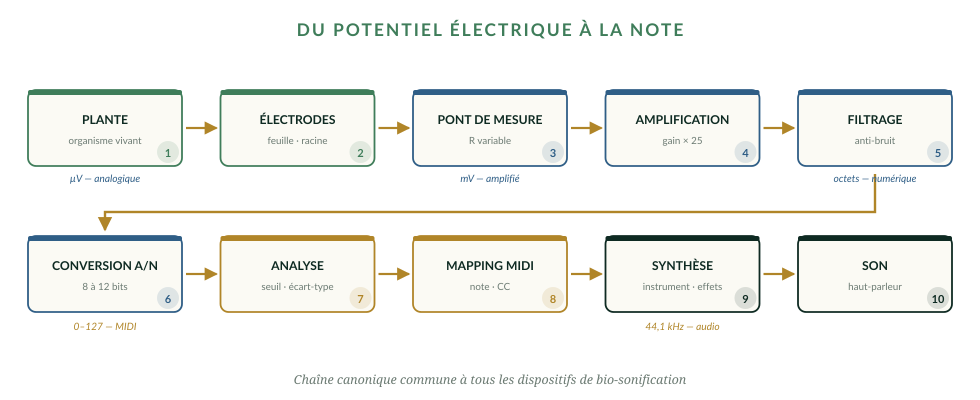
Fig. 1.1. Toute la difficulté de ce domaine tient dans cette chaîne : entre le phénomène biologique et ce que l'on en perçoit, il y a autant d'étapes que d'occasions de se tromper sur ce qu'on tient.
Quatre critères pour évaluer un canal
Pour comparer honnêtement des voies aussi différentes, il faut des critères explicites. Voici ceux que ce volume applique systématiquement.
Le mécanisme physique est-il identifié ? Sait-on pourquoi le signal existe ? Un mécanisme identifié résiste ; une corrélation inexpliquée ne résiste pas.
Le signal porte-t-il une information exploitable ? Critère opératoire : un classificateur automatique parvient-il, à partir de ce seul signal, à distinguer des états physiologiques ? Si oui, l'information est présente, quelle que soit sa signification.
Un récepteur naturel l'exploite-t-il ? Question empirique et distincte de la précédente. Un signal peut être informatif pour un chercheur muni d'instruments sans que rien, dans la nature, ne l'écoute.
Y a-t-il un avantage sélectif à émettre ? Sans quoi le signal est un sous-produit, non une communication. Un craquement de parquet qui sèche est informatif ; il n'est pas émis pour informer.
✦ Le tableau que ce volume va remplir
Canal
1. Mécanisme
2. Information
3. Récepteur
4. Avantage
Électrique
Oui
Oui
Interne à la plante
Oui — défense systémique
Hydraulique
Oui
Oui
Interne à la plante
Oui
Acoustique
Oui
Oui
Non établi
Non établi
Chimique
Oui
Oui
Oui
Discuté — voir chapitre 9
Souterrain
Partiel
Partiel
Discuté
Non établi
Chaque case de ce tableau est justifiée dans le chapitre correspondant. Notez la colonne 3 : c'est elle qui sépare une émission d'une communication, et c'est elle que la vulgarisation escamote systématiquement.
Les échelles de temps, et pourquoi elles comptent
Une observation souvent négligée : ces canaux opèrent à des vitesses séparées par plusieurs ordres de grandeur, et cela détermine ce qu'ils peuvent transporter.
Échelles de temps des canaux végétaux
microseconde milliseconde seconde minute heure jour
│ │ │ │ │ │
├──────────────┼────────────┼────────────┼────────────┼───────────┤
│ │ │ │ │ │
│ ┌────┴────┐ │ │ │ │
│ │ CLIC DE │ │ │ │ │
│ │CAVITATION │ │ │ │
│ │ ~0,1 ms │ │ │ │ │
│ └─────────┘ │ │ │ │
│ ┌────┴─────┐ │ │ │
│ │POTENTIEL │ │ │ │
│ │ D'ACTION │ │ │ │
│ │ ~3 s │ │ │ │
│ └──────────┘ │ │ │
│ ┌────┴──────┐ │ │
│ │ POTENTIEL │ │ │
│ │ DE VARIAT.│ │ │
│ │ ~45 s │ │ │
│ └───────────┘ │ │
│ ┌────────────┐ │ │
│ │ ÉMISSION │ │ │
│ │ DE VOLATILS│ │ │
│ │ minutes │ │ │
│ └────────────┘ │ │
│ ┌────┴──────┐ │
│ │ ÉLECTROME │ │
│ │ (rythmes) │ │
│ └───────────┘ │
│ ┌────┴────┐
│ │TRANSFERT│
│ │MYCORHIZ.│
│ └─────────┘
CONSÉQUENCE POUR LA MESURE
Un dispositif qui échantillonne toutes les 15 minutes ne peut PAS
voir un potentiel d'action, ni a fortiori un clic de cavitation.
Il ne voit que la dernière ligne — et ce qu'il appelle « réactivité »
est une dérive lente.
La fréquence d'échantillonnage détermine quel canal on observe. La plupart des appareils grand public échantillonnent trop lentement pour voir autre chose que l'électrome.
À retenir
Cinq canaux : électrique, hydraulique, acoustique, chimique, souterrain.
Quatre critères d'évaluation : mécanisme, information, récepteur naturel, avantage sélectif.
Le critère 3 — existe-t-il un récepteur ? — sépare l'émission de la communication.
Les échelles de temps s'étalent sur neuf ordres de grandeur, de la microseconde au jour.
La fréquence d'échantillonnage décide de quel canal on observe — souvent à l'insu de l'observateur.
Cent cinquante ans d'une question mal posée
L'histoire de ce domaine est un cycle : une découverte solide, une surinterprétation spectaculaire, une réfutation discrète, un oubli — puis le cycle recommence avec une technologie nouvelle.
Fig. 1.2. Cent cinquante ans. Les jalons en vert et bleu sont des résultats mesurés ; ceux en cuivre sont des dispositifs artistiques ou médiatiques. Observez que chaque emballement est suivi d'une correction — qui ne circule pas.
1873-1927 : les fondateurs
John Burdon-Sanderson (1873) enregistre le premier potentiel d'action végétal, sur une feuille de dionée, dans les Proceedings of the Royal Society of London 21, p. 495-496. Le contexte mérite d'être noté : il travaillait sur des plants fournis par Charles Darwin, qui préparait The Power of Movement in Plants (1880) avec son fils Francis.
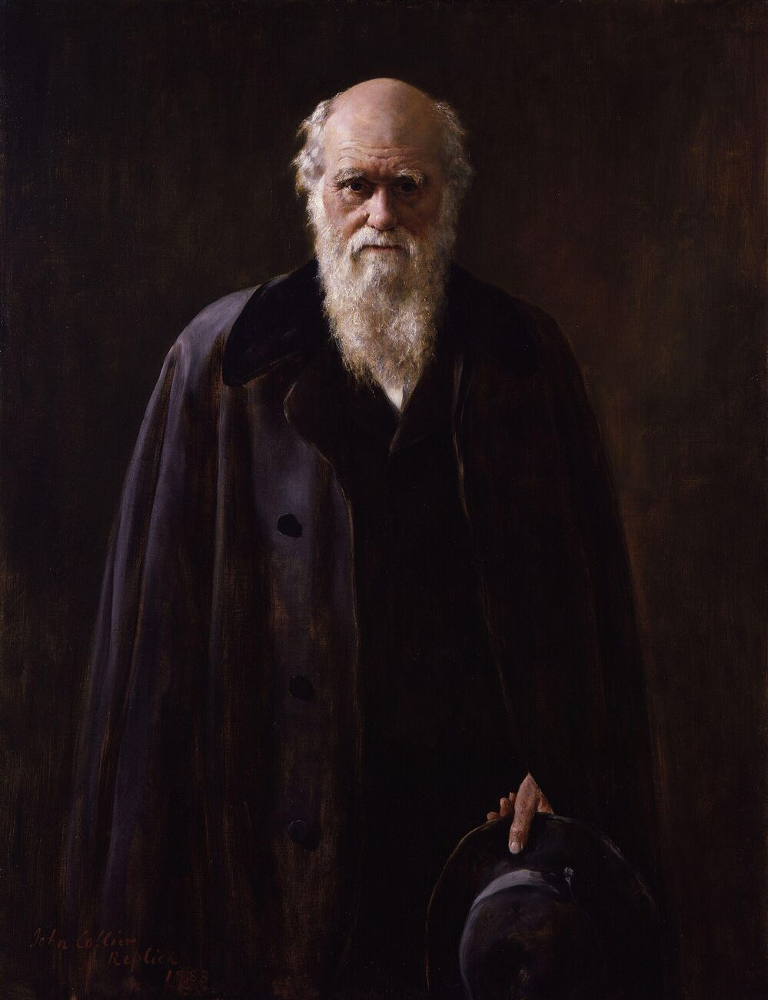
Fig. 1.3. Charles Darwin. Ses travaux sur le mouvement des plantes ouvrent la question du signal végétal.Portrait de Charles Darwin — John Collier, domaine public, Wikimedia Commons.
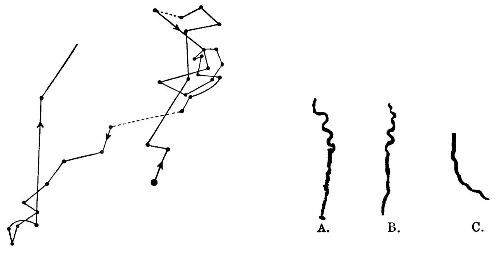
Fig. 1.4. Planche du Power of Movement in Plants : le tracé du mouvement des radicules.Movement of radicles, from Darwin, Power of Movement in Plants — domaine public.
Jagadish Chandra Bose publie Response in the Living and Non-Living (1902), puis Comparative Electro-Physiology (1907) et Researches on Irritability of Plants (1913). Il conçoit le crescographe, qui amplifie optiquement la croissance jusqu'à la rendre visible en temps réel. Son intuition centrale — que la réponse électrique est un phénomène général du vivant — est juste. Sa formulation, qui efface la frontière entre le vivant et le non-vivant, a mal vieilli.
⚠️ Une vérification bibliographique
The Nervous Mechanism of Plants (1926), fréquemment cité comme ouvrage de Bose, n'a pas pu être retrouvé dans les catalogues numériques consultés lors de la préparation de ce volume. Son existence est attestée par des sources secondaires uniquement. Nous le mentionnons avec cette réserve plutôt que de le citer comme si nous l'avions consulté.
Fig. 1.5. Jagadish Chandra Bose (1858-1937). Son intuition — que la réponse électrique est un phénomène général du vivant — était juste.1920 Jagadish Chandra Bose — Georges Chevalier, CC BY-SA 4.0.
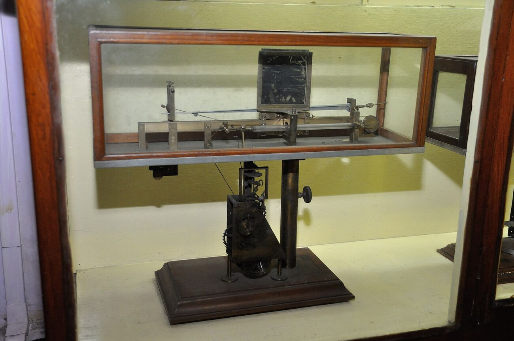
Fig. 1.6. Le crescographe : amplification optique de la croissance, rendue visible en temps réel.Crescograph - Jagadish Chandra Bose Museum - Bose Institute - Kolkata 2011-07-26 4039 — Biswarup Ganguly, CC BY 3.0.
1966-1975 : l'emballement et sa réfutation
En 1966, Cleve Backster, spécialiste du polygraphe, relie un dracaena à un appareil de mesure de la conductance électrodermale et croit observer des réponses aux intentions humaines. L'affirmation est reprise par The Secret Life of Plants (Tompkins & Bird, 1973), qui connaît un succès mondial et fixe pour cinquante ans l'imaginaire du domaine.
🔬 La réfutation, et son sort
Horowitz, K. A., Lewis, D. C. & Gasteiger, E. L. (1975), « Plant "Primary Perception": Electrophysiological Unresponsiveness to Brine Shrimp Killing », Science 189(4201), p. 478-480.
Réplication en conditions contrôlées du protocole de Backster : aucune relation entre l'événement et l'activité électrique du philodendron. Les tracés observés par Backster s'expliquent par l'électricité statique, les mouvements et l'humidité — c'est-à-dire par trois des sept artefacts que le volume I catalogue.
Cette réfutation est parue dans Science, l'une des deux revues les plus lues au monde. Elle est aujourd'hui, en volume de citations grand public, invisible face au livre qu'elle réfutait.
2006-2026 : la période actuelle
La période récente est infiniment plus solide. Trois raisons techniques l'expliquent : l'imagerie calcique par capteurs fluorescents génétiquement encodés, qui rend les ondes visibles ; la génétique inverse, qui permet de supprimer un récepteur et d'observer la disparition du phénomène ; et la classification automatique, qui mesure objectivement l'information présente dans un signal.
Mais le cycle n'a pas cessé. Il s'est seulement déplacé : les emballements portent désormais sur l'apprentissage et la conscience plutôt que sur la télépathie, et les corrections restent aussi discrètes.
✦ La régularité à retenir
Dans ce domaine, depuis cent cinquante ans, le délai moyen entre une affirmation spectaculaire et sa mise au point publiée est de cinq à dix ans — et la mise au point ne circule jamais.
Conséquence pratique pour le lecteur : devant toute affirmation forte dans ce champ, cherchez systématiquement la réponse publiée. Elle existe presque toujours. Il suffit de la chercher, et personne ne vous l'apportera.
À retenir
Burdon-Sanderson (1873) enregistre le premier potentiel d'action végétal, sur des plants fournis par Darwin.
Bose fonde l'électrophysiologie végétale expérimentale entre 1902 et 1913.
L'effet Backster (1966) a été réfuté en 1975 dans Science — réfutation restée invisible.
La période actuelle doit sa solidité à l'imagerie calcique, la génétique inverse et la classification automatique.
Délai typique entre affirmation et mise au point : cinq à dix ans. La mise au point ne circule pas.
PartieII
Le canal électrique
Trois classes de signaux, une voie moléculaire identifiée, et un fond permanent d'oscillations. Le canal le mieux documenté — et celui dont on tire le plus d'abus.
Les trois classes de signaux
Potentiel d'action, potentiel de variation, potentiel systémique. Trois phénomènes distincts, qu'on regroupe abusivement sous « signaux électriques des plantes ». Leurs différences décident de tout.
Toute cellule vivante entretient un gradient ionique coûteux de part et d'autre de sa membrane. Chez les plantes, le potentiel de repos est plus négatif que chez l'animal — il descend couramment à −120, voire −180 millivolts, contre environ −70 pour un neurone — parce qu'il repose sur une pompe différente : une ATPase à protons qui expulse des H⁺ en consommant de l'ATP.
Cette différence de mécanisme a une conséquence directe pour l'instrumentiste : les plantes sont électriquement « bruyantes », parce qu'elles ont beaucoup à perdre et à regagner. Toute perturbation qui touche la pompe à protons déplace le potentiel.
La taxonomie de référence
La classification qui fait autorité est celle de Mudrilov, Ladeynova, Grinberg, Balalaeva & Vodeneev (2021), International Journal of Molecular Sciences 22(19):10715.
Potentiel d'action
Potentiel de variation
Potentiel systémique
Forme
Impulsion stéréotypée
Irrégulière
Lente
Amplitude
Dizaines à ≈ 100 mV (mesure intracellulaire)
Plusieurs dizaines de mV
Faible
Durée
Quelques s à quelques dizaines de s
Jusqu'à des dizaines de minutes
Longue
Tout ou rien
Oui, avec seuil et période réfractaire
Non
Non
Auto-propagé
Oui, 1 à 10 cm/s
Non — réponse locale à une onde
Non
Sens
Dépolarisation
Dépolarisation
Hyperpolarisation
Voie
Phloème, plasmodesmes
Onde hydraulique du xylème
Systémique
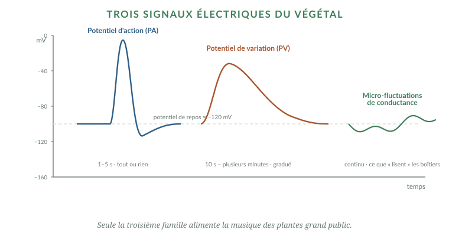
Fig. 2.1. Les trois signatures, à la même échelle de temps. La différence de durée entre le potentiel d'action et le potentiel de variation est d'un facteur quinze — ce qui suffit à les distinguer sans ambiguïté sur un enregistrement correct.
Fig. 2.2. Coupe de tige : xylème et phloème. Le phloème est la voie de propagation des potentiels d'action — le « câble vert ».Rose stalk tissues — Misiek1962, CC BY 4.0.
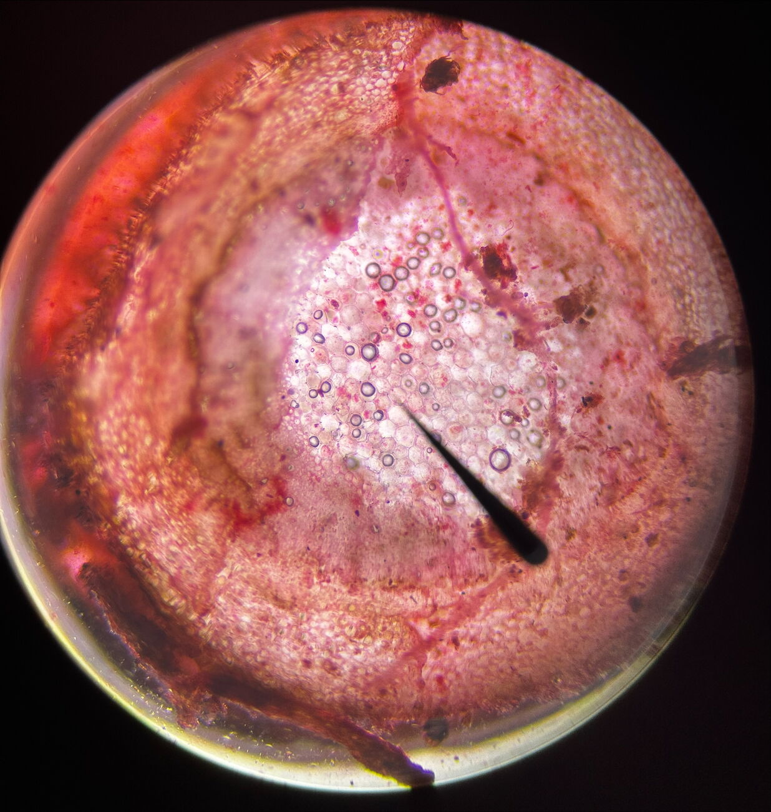
Fig. 2.3. Faisceaux conducteurs. Toute la signalisation longue distance passe par ces quelques millimètres de tissu.Urtica dioica stem cross section micrograph.zip — Mdantonio2005, CC BY-SA 4.0.
Le mécanisme ionique du potentiel d'action
La séquence est établie, et elle est inverse de celle du neurone animal — point que les analogies rapides escamotent systématiquement.
Activation de canaux calciques voltage-dépendants (dont la nature moléculaire exacte reste incertaine).
Le Ca²⁺ entrant active des canaux anioniques : efflux de chlorure. Simultanément, il désactive la pompe à protons. C'est la phase de dépolarisation.
Efflux de potassium et réactivation de la pompe : repolarisation.
Preuve pharmacologique : le phénomène est bloqué par les inhibiteurs de canaux anioniques (acide éthacrynique, acide anthracène-9-carboxylique, NPPB) et par les inhibiteurs de la pompe à protons.
⚠️ « Comme un neurone » : l'analogie et ses limites
Chez le neurone, la dépolarisation vient d'une entrée de sodium. Chez la plante, d'une sortie de chlorure. Ce n'est pas un détail : ce sont deux inventions évolutives indépendantes, qui aboutissent à une forme d'onde superficiellement similaire par des moyens entièrement différents.
L'analogie est donc fonctionnelle et non homologique. Elle autorise à dire « les deux transportent un événement à distance ». Elle n'autorise pas à transférer à la plante ce que l'on sait du système nerveux.
Les chiffres, avec leur protocole
🔬 Point scientifique — mesure intraphloémienne par bioélectrodes vivantes
Ibacache-Carrión, Bolua-Hernández, Michard & Ramírez (2026), Physiologia Plantarum 178(4):e71066.
Protocole remarquable : électrographie de pénétration utilisant des pucerons vivants (Acyrthosiphon pisum) comme bioélectrodes — fil d'or de 25 µm, colle d'argent conductrice — sur Vicia faba. L'insecte insère lui-même son stylet dans le tube criblé, accédant au phloème sans le léser.
Paramètre
AP (section)
VP (flamme 2-5 s)
Amplitude
12,43 ± 0,51 mV
11,63 ± 0,41 mV
Durée
3,04 ± 0,25 s
45,32 ± 5,3 s
Vitesse globale
2,6 ± 0,2 cm/s
0,38 ± 0,03 cm/s
Acropète
2,71 ± 0,43 cm/s
0,59 ± 0,08 cm/s
Basipète
2,43 ± 0,56 cm/s
0,38 ± 0,05 cm/s
Asymétrie
Non (p = 0,07-0,70)
Oui (p < 0,05)
La leçon méthodologique du volume. Ces 12 mV sont un ordre de grandeur sous les « dizaines à centaine de mV » des mesures intracellulaires. Les deux chiffres sont exacts ; ils ne mesurent pas au même endroit. Toute amplitude citée sans son protocole est ininterprétable.
Sur le potentiel de variation, Blyth & Morris (2019), Frontiers in Plant Science 10:1393, donnent une vitesse de l'ordre de 1 à 2 mm/s, contre environ 10 cm/s pour l'onde hydraulique elle-même. Cet écart motive leur modèle de dispersion augmentée par cisaillement d'une substance de blessure dans le xylème.
✦ L'argument décisif en faveur d'une origine hydraulique
Le potentiel de variation traverse les zones de tissu nécrosé. Un signal électrique auto-propagé ne le ferait pas : il lui faudrait des cellules vivantes pour se régénérer.
C'est une observation simple, décisive, et qui illustre comment on tranche entre deux mécanismes concurrents : non par argument d'autorité, mais en trouvant la condition où ils prédisent des choses différentes.
À retenir
Le potentiel de repos végétal descend à −180 mV, contre −70 mV pour un neurone, via une pompe à protons.
Le potentiel d'action végétal repose sur une sortie de chlorure, non sur une entrée de sodium : analogie fonctionnelle, non homologique.
Mesures intraphloémiennes : 12,4 mV / 3,0 s / 2,6 cm·s⁻¹ pour l'AP ; 11,6 mV / 45,3 s / 0,38 cm·s⁻¹ pour le VP.
Toute amplitude citée sans son protocole est ininterprétable.
Le VP traverse les tissus nécrosés : preuve de son origine hydraulique et non électrique.
La voie du glutamate et l'onde calcique
Le résultat le plus solide de la décennie, et celui qui a le plus alimenté les surinterprétations. Voici ce qu'il établit exactement — et le chiffre qu'il ne faut pas citer.
L'histoire commence en 2013. Mousavi, Chauvin, Pascaud, Kellenberger & Farmer, Nature 500(7463), p. 422-426, criblent trente-quatre lignées mutantes d'Arabidopsis et identifient trois gènes nécessaires à la signalisation de blessure de feuille à feuille : GLR3.2, GLR3.3 et GLR3.6, de la famille des récepteurs apparentés au glutamate.
Cinq ans plus tard, Toyota, Spencer, Sawai-Toyota, Jiaqi, Zhang, Koo, Howe & Gilroy (2018), Science 361(6407), p. 1112-1115, établissent le mécanisme et le rendent visible.
Nous montrons ici que le glutamate est un signal de blessure chez les plantes. Des canaux ioniques de la famille des récepteurs apparentés au glutamate agissent comme des capteurs qui convertissent ce signal en une augmentation de la concentration intracellulaire d'ions calcium, laquelle se propage vers des organes distants, où les réponses de défense sont alors induites.
Toyota et al., Science, 2018 — résumé
🔬 Ce qui fait la solidité de ce résultat
Suppression : la propagation est totalement abolie chez le double mutant dépourvu de GLR3.3 et GLR3.6.
Restauration : elle revient à un niveau quasi sauvage par réexpression de GLR3.6 dans cette lignée.
Suffisance : l'application de glutamate à 100 mM suffit à déclencher les élévations calciques systémiques, dépendantes de ces mêmes récepteurs.
Visualisation : l'imagerie par capteur calcique fluorescent (GCaMP3) rend l'onde directement observable.
Suppression, restauration, suffisance, visualisation : c'est le quadruplet qui distingue une démonstration causale d'une corrélation. Peu de résultats de ce domaine l'atteignent.
⚠️ Le chiffre que nous ne citerons pas
La vitesse de cette onde calcique — souvent donnée comme « environ 1 mm/s » — n'a pas pu être vérifiée sur la source primaire lors de la préparation de ce volume. Le texte intégral n'était pas accessible.
Nous ne le citons donc pas. Ce n'est pas de la pusillanimité : les chiffres orphelins de leur source sont le principal vecteur de dérive dans ce domaine. Ils circulent, se déforment, et finissent par fonder des raisonnements.
Fig. 2.4. Les poils sensitifs de la dionée : le capteur mécanique qui déclenche le potentiel d'action.Venus Flytrap showing trigger hairs — Noah Elhardt, CC BY-SA 2.5.
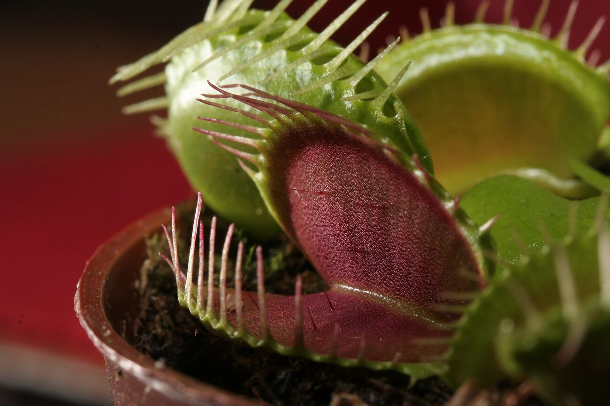
Fig. 2.5. Le piège refermé. La dionée compte les stimulations successives avant de se fermer.Dionaea muscipula trap — che, CC BY-SA 2.5.
Trois raffinements que la vulgarisation omet
Les potentiels d'action phloémiens sont indépendants des GLR
Hedrich, Salvador-Recatalà & Dreyer (2016), Trends in Plant Science 21(5), p. 376-387, décrivent le phloème comme un « câble vert » et précisent explicitement : « les potentiels d'action phloémiens sont initiés et propagés indépendamment de ces récepteurs au glutamate ».
Autrement dit : les GLR sont nécessaires à la transmission du signal de blessure d'une feuille à l'autre, mais ne sont pas le mécanisme du potentiel d'action lui-même. Deux systèmes, pas un.
La dépolarisation précède le maximum calcique
Nguyen, Kurenda, Stolz, Chételat & Farmer (2018), PNAS 115(40), p. 10178-10183, observent que « les dépolarisations de membrane induites par la blessure, chez le type sauvage, précèdent les maxima calciques cytosoliques ». Cet ordre temporel contraint les modèles causaux : ce n'est pas simplement « le calcium monte, donc la membrane se dépolarise ».
La cellule compagne est essentielle
Wu, Li, Chen & Kong (2024), PNAS 121(24):e2400639121 : « GLR3.3 doit être renouvelé depuis les cellules compagnes pour assurer sa fonction dans les éléments criblés ». Le tube criblé mature étant énucléé, il ne peut pas produire ses propres protéines : la cellule compagne les lui fournit en continu.
✦ Ce que ce dossier établit, en une phrase
Une plante blessée signale l'événement à distance, par un mécanisme moléculaire identifié, et cette information déclenche une réponse préparatoire dans des organes non touchés.
C'est considérable. Ce n'est pas du langage : il n'y a ni lexique, ni syntaxe, ni destinataire choisi, ni modulation du message selon l'interlocuteur. C'est une alarme incendie — un signal unique, non modulé, qui déclenche une réponse stéréotypée. Une alarme incendie est utile ; ce n'est pas une conversation.
À retenir
Le glutamate est un signal de blessure démontré (Mousavi 2013, Toyota 2018).
La vitesse de l'onde calcique souvent citée n'a pas été vérifiée sur source primaire — nous ne la citons pas.
Les AP phloémiens sont indépendants des GLR : deux systèmes distincts.
C'est une alarme, non une conversation : signal unique, non modulé, réponse stéréotypée.
L'électrome : le fond permanent
Sous les événements rares, il y a un bruit continu. Depuis 2016, ce bruit a un nom, une méthode d'analyse, et une valeur diagnostique démontrée — c'est le versant scientifique légitime de tout ce domaine.
Les potentiels d'action sont des événements : ils surviennent, se propagent, cessent. Chez la plupart des plantes, ils sont rares. Mais l'activité électrique, elle, ne cesse jamais : la tension entre deux points d'un tissu dérive continuellement, sur des échelles de temps allant de la seconde à la journée.
Pendant des décennies, cette activité a été traitée comme du bruit — c'est-à-dire jetée. Depuis une dizaine d'années, une communauté de recherche la considère comme un système dynamique à part entière et lui a donné un nom : l'électrome, par analogie avec le génome et le protéome.
🔬 Point scientifique — le dossier de l'électrome
Souza, G. M., Ferreira, A. S., Saraiva, G. F. & Toledo, G. R. (2017), Plant Signaling & Behavior 12(3):e1290040. Les signaux électriques de plantules de soja peuvent être poussés vers un état critique auto-organisé par des stimuli externes. (Attention : cet article est en Plant Signaling & Behavior, et non dans Theoretical and Experimental Plant Physiology comme on le lit parfois.)
Simmi, F. Z., Dallagnol, L. J., Ferreira, A. S., Pereira, D. R. & Souza, G. M. (2020), Bioelectrochemistry 133:107493. Détection d'une infection fongique avant tout symptôme visible, par analyse d'entropie approchée de l'électrome.
de Toledo, G. R. A., Reissig, G. N., Senko, L. G. S., Pereira, D. R., da Silva, A. F. & Souza, G. M. (2024), Plant Signaling & Behavior 19(1):2333144. Classification par apprentissage automatique atteignant jusqu'à 100 % d'exactitude (machine à vecteurs de support) pour la détection du stress salin ; les changements électriques précèdent les altérations visibles de turgescence.
Ce que ce résultat signifie, exactement
Prenons la mesure de ce qui est établi, car c'est important et souvent mal compris dans les deux sens.
✦ Ce qui est démontré
Une série temporelle de tension, prise entre deux points d'une plante, contient assez d'information pour qu'un classificateur distingue un état physiologique d'un autre — stress hydrique, stress salin, infection — avant que ces états ne soient visibles.
C'est une affirmation forte, et elle est vérifiée. Elle a une conséquence directe : ces signaux ne sont pas du bruit. Ils portent de l'information sur l'état de la plante, et cette information est extractible.
⚠️ Ce qui n'est pas démontré
Que cette information soit destinée à quelqu'un. Qu'elle constitue un code. Qu'elle soit modulée intentionnellement. Que la plante en ait un usage communicationnel.
Un classificateur qui distingue une plante stressée d'une plante saine fait exactement ce que fait un thermomètre : il lit un état. Personne n'en conclut que la fièvre est un message.
Réserve supplémentaire : une partie de ce corpus glisse vers un vocabulaire d'« attention » et de « cognition » végétales. Les mesures d'électrome sont solides ; leur interprétation cognitive ne fait pas consensus. Il faut tenir les deux affirmations ensemble.
Mesurer un électrome hors du laboratoire
Toutes les études ci-dessus sont conduites en environnement contrôlé, souvent en cage de Faraday. La question pratique — peut-on faire cela dehors ? — a sa référence.
🔬 Point scientifique — hors cage de Faraday
Tran, D., Dutoit, F., Najdenovska, E., Wallbridge, N., Plummer, C., Mazza, M., Raileanu, L. E. & Camps, C. (2019), « Electrophysiological assessment of plant status outside a Faraday cage using supervised machine learning », Scientific Reports 9:17073.
Capteur conçu pour la production sous serre, sans blindage, détectant une modification de l'activité bioélectrique sous stress hydrique ainsi qu'un rythme nycthéméral, avec classification supervisée du statut physiologique.
Double conclusion. C'est faisable — l'entreprise n'est pas vaine. Et il a fallu huit chercheurs, un capteur dédié et de l'apprentissage supervisé pour y parvenir de façon défendable. Tout dispositif qui prétend le faire sans ces précautions mérite un examen attentif.
Le cas particulier des arbres sur pied
Sur un arbre adulte en extérieur, les chiffres changent d'échelle — et les artefacts aussi.
Étude
Espèce
Protocole
Amplitudes
Hao, Li & Hao (2021) J. Exp. Bot. 72(4)
Populus hopeiensis
Électrodes inox 30 × 4 mm, à 50 cm de haut, 5 mm dans le xylème ; masse enterrée à 20-80 cm
Plusieurs centaines de mV en saison, parfois 1 V ; quelques dizaines de mV en hiver
Gibert et al. (2006) Plant Science 171(5)
Populus nigra
Tiges inox ⌀ 6 mm, 5 mm dans l'aubier, référence impolarisable Pb/PbCl₂
Variations journalières nettes en été, disparaissant après la chute des feuilles
Gurovich & Hermosilla (2009) J. Plant Physiol. 166(3)
Arbres fruitiers
Microélectrodes dans le tronc
Motifs systématiques selon le cycle jour/nuit et la disponibilité en eau
Ríos-Rojas et al. (2015) Plant Signal. Behav. 10(2)
Persea, Prunus
Télémétrie sans fil
Arbres stressés : changements progressifs de pente ; arbres irrigués : cycles journaliers à pente nulle
Les amplitudes sur arbre sont cent fois supérieures à celles mesurées dans le phloème d'une féverole. Ce n'est pas le même phénomène : c'est essentiellement de l'électrocinétique.
⚠️ Ce que Hao et al. concluent de leurs propres données
Les auteurs attribuent explicitement leurs variations aux ions accumulés à la surface de l'électrode en fonction de la disponibilité en eau du xylème — c'est-à-dire à l'interface de mesure autant qu'au tissu mesuré.
Et la disparition du signal après la chute des feuilles, chez Gibert et al., pointe dans la même direction : ce qui est mesuré est un potentiel d'écoulement, phénomène électrocinétique engendré par le mouvement de la sève à travers une matrice chargée.
C'est réel, mesurable et physiologiquement informatif. Ce n'est pas de la signalisation. Un praticien qui pose des électrodes sur un tronc doit savoir qu'il mesure d'abord cela.
✨ Une remarque pour le praticien
Il y a quelque chose de beau, et de rarement souligné, dans ce résultat. Le « signal » d'un arbre, celui qu'on capte effectivement sur un tronc, est en grande partie le bruit de l'eau qui monte — trente mètres, sous tension, en silence, tous les jours d'été.
Ce n'est pas un message. C'est mieux : c'est le travail lui-même, rendu audible. Un praticien qui écoute cela n'écoute pas une confidence ; il écoute une machine hydraulique vieille de quatre cents millions d'années, en train de fonctionner.
À retenir
L'électrome — l'activité électrique continue — porte une information extractible sur l'état physiologique.
Classification automatique du stress salin jusqu'à 100 % d'exactitude, avant tout symptôme visible.
Mesurable hors cage de Faraday, mais au prix d'un capteur dédié et d'apprentissage supervisé (Tran et al., 2019).
Sur arbre sur pied : plusieurs centaines de mV en été, quelques dizaines en hiver ; disparition après la chute des feuilles.
Ce qui domine la mesure sur tronc est un potentiel d'écoulement, non de la signalisation.
PartieIII
Le canal acoustique
Les plantes émettent bien des sons. Le mécanisme est connu depuis 1966. Ce qui a changé en 2023, ce n'est pas la découverte du phénomène — c'est la démonstration qu'il porte de l'information. Et ce n'est pas la même chose qu'une communication.
L'émission : mécanique de la cavitation
Pourquoi un arbre assoiffé fait-il du bruit ? La réponse tient en une phrase de physique — et elle est plus étonnante que n'importe quelle métaphore.
Commençons par le fait qui rend tout le reste possible, et qui reste l'un des plus stupéfiants de la biologie végétale : dans un arbre, l'eau monte sous tension. Elle n'est pas poussée par le bas ; elle est tirée par le haut, par l'évaporation aux stomates. La colonne d'eau est donc en pression négative — couramment de −0,5 à −3 mégapascals — état métastable qu'aucun ingénieur ne concevrait volontairement.
Cette colonne tient par cohésion moléculaire. Quand la tension devient trop forte, ou qu'un pore laisse entrer une bulle, elle casse. Le vaisseau se vide brutalement de son eau et se remplit de vapeur : c'est l'embolie. La détente élastique des parois libère une onde — un clic.
Fig. 3.1. Colonne continue, rupture, embolie. Chaque clic correspond à la mort fonctionnelle d'un vaisseau conducteur : ce n'est pas une expression, c'est une avarie.
1966 : une tête de lecture de tourne-disque
Milburn, J. A. & Johnson, R. P. C. (1966), « The conduction of sap. II. Detection of vibrations produced by sap cavitation in Ricinus xylem », Planta 69, p. 43-52.
Le dispositif est délicieusement artisanal : une tête de lecture de tourne-disque appliquée contre un pétiole, reliée à un amplificateur et à un haut-parleur. Et les clics étaient audibles — dans la bande acoustique ordinaire, sans ultrasons. C'est l'acte de naissance de la bioacoustique végétale expérimentale, et il date de soixante ans.
✦ Une remarque qui remet les choses en place
Quand la presse a annoncé en 2023 que « les plantes émettent des sons », l'information était vieille de cinquante-sept ans. Ce qui était nouveau, c'était autre chose — la propagation aérienne et la classification automatique — et c'est bien plus intéressant. Nous y venons au chapitre suivant.
Le fait qu'une découverte de 1966 ait pu être présentée comme neuve en 2023 dit quelque chose du fonctionnement de la transmission scientifique vers le public : ce n'est pas la nouveauté qui circule, c'est l'étonnement.
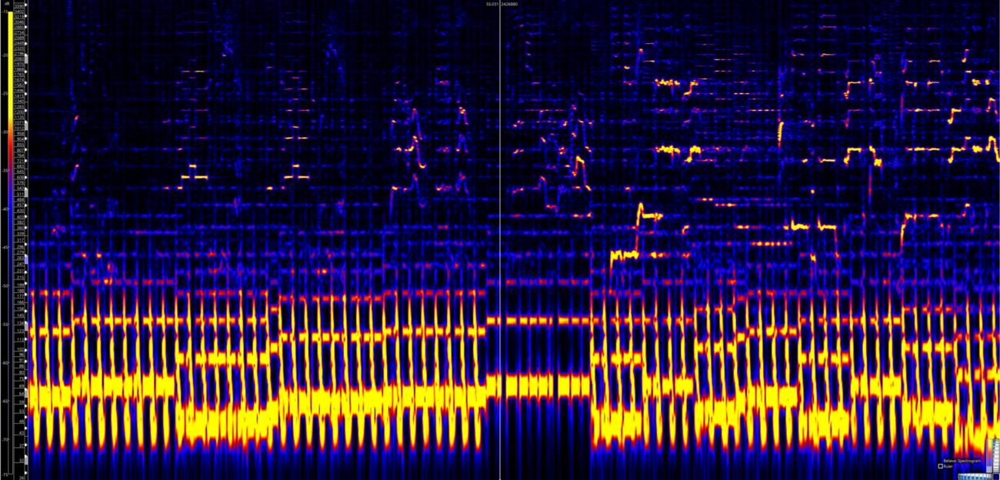
Fig. 3.2. Un spectrogramme : la représentation temps-fréquence sur laquelle se lisent les émissions ultrasonores.Believe, by Cher - refrain and strophe spectrogram (software - Sonic Visualizer) — Sonic Visualizer, CC BY-SA 4.0.
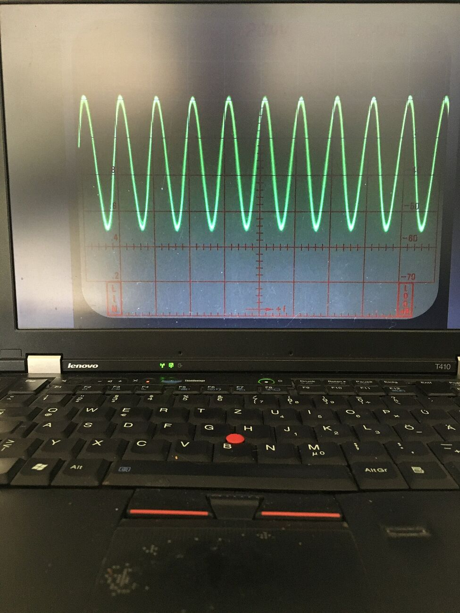
Fig. 3.3. Un oscillogramme. Regarder le signal brut avant toute analyse reste le premier réflexe.Oscillogram shown on laptop screen — Pittigrilli, CC BY-SA 4.0.
Les protocoles actuels
La détection moderne s'est déplacée vers l'ultrasonore, pour une raison pratique : au-dessus de 20 kHz, le bruit de fond ambiant devient négligeable.
Paramètre
Pratique établie
Bande de détection
Au-dessus de 20 kHz pour s'affranchir du bruit de fond
Capteur R15
50 à 200 kHz — le plus utilisé historiquement
Capteur WD
100 à 1 000 kHz
Capteur large bande KRNBB-PC
Pour l'analyse spectrale complète
Seuil d'amplitude
35 dB en laboratoire, 45 dB au champ (pour filtrer les artefacts dus au vent)
D'après le protocole PROMETHEUS, réseau européen de physiologie des plantes ligneuses.
⚠️ Ce qui produit des clics et n'est PAS de la cavitation
Point critique, et systématiquement escamoté. Produisent également des émissions acoustiques dans la même bande :
le retrait du bois en déshydratation ;
la rupture mécanique de fibres ;
les émissions de l'écorce qui sèche ;
les mouvements d'organes sous le vent ;
les interférences radiofréquence des éclairages fluorescents.
Autrement dit : un clic n'est pas une preuve de cavitation. Toute étude sérieuse doit écarter ces cinq sources avant de conclure.
La valeur diagnostique, elle, est établie
🔬 Point scientifique — un indicateur qui marche
Nolf, M., Beikircher, B., Rosner, S., Nolf, A. & Mayr, S. (2015), « Xylem cavitation resistance can be estimated based on time-dependent rate of acoustic emissions », New Phytologist 208(2), p. 625-632.
Sur 16 espèces et 3 cultivars : corrélation linéaire entre le potentiel hydrique à 50 % de perte de conductivité hydraulique et l'activité acoustique maximale — p < 0,001, R² = 0,76.
Raffinement méthodologique : l'usage du taux temporel d'émissions, plutôt que du cumul, améliore l'estimation et atténue les signaux parasites aux stades avancés de déshydratation.
C'est donc un véritable indicateur de vulnérabilité à la sécheresse, utilisable en écophysiologie forestière. Le canal acoustique n'est pas anecdotique : il est utile.
Un détail physique mérite mention, car il a des conséquences pour quiconque voudrait « écouter » un arbre. Fernández, Fernández & Bilmes (2012), Papers in Physics 4:040003, montrent que l'émission provient d'une oscillation transitoire de la cavité au moment de l'inception, et non d'un collapsus unique — et surtout que le signal subit une absorption et un filtrage fréquentiel en se propageant dans le tissu.
⚠️ Conséquence majeure, rarement énoncée
Le spectre enregistré en surface n'est pas le spectre émis. Le bois filtre. Deux capteurs placés à des endroits différents du même tronc n'entendront pas la même chose du même événement.
Toute analyse spectrale d'émissions acoustiques végétales doit donc préciser où était le capteur — et toute comparaison entre études qui ne le précisent pas est sans valeur.
À retenir
Dans un arbre, l'eau monte sous tension : −0,5 à −3 MPa, état métastable.
La cavitation est la rupture de cette colonne ; le clic est la détente élastique qui suit.
Premier enregistrement : Milburn & Johnson, 1966, avec une tête de lecture de tourne-disque.
Cinq sources d'émissions acoustiques ne sont pas de la cavitation : un clic ne prouve rien à lui seul.
Valeur diagnostique établie : R² = 0,76 entre activité acoustique et vulnérabilité à la sécheresse.
Le bois filtre : le spectre enregistré en surface n'est pas le spectre émis.
2023 : ce que l'étude de référence établit, et ce qu'elle ne dit pas
L'article le plus médiatisé du domaine est aussi l'un des mieux contrôlés. Le lire en entier est instructif — y compris pour voir tout ce que la reprise médiatique lui a fait dire.
Khait, I., Lewin-Epstein, O., Sharon, R., Saban, K., Goldstein, R., Anikster, Y., Zeron, Y., Agassy, C., Nizan, S., Sharabi, G., Perelman, R., Boonman, A., Sade, N., Yovel, Y. & Hadany, L. (2023), « Sounds emitted by plants under stress are airborne and informative », Cell 186(7), p. 1328-1336.e10.
Le protocole, en détail
Il vaut la peine d'être exposé complètement, parce qu'il constitue le meilleur modèle disponible de ce qu'exige une affirmation de ce type.
Élément
Mise en œuvre
Environnement
Boîte acoustique de 50 × 100 × 150 cm, au sous-sol, parois atténuant d'au moins 100 dB SPL
Captation
Deux microphones directionnels par plante — pour éliminer les fausses détections dues au bruit électronique et aux interférences entre plantes
Matériel
Microphone à condensateur CM16, convertisseur UltraSoundGate 1216H
Échantillonnage
500 kHz par canal, filtre passe-haut à 20 kHz
Déclenchement
Enregistrement de 1,5 s dès que le signal dépasse 2 % de la dynamique
Bande étudiée
20 à 150 kHz
Espèces
Tomate et tabac en conditions contrôlées ; sons également enregistrés chez blé, maïs, vigne, cactus et lamier
Contrôles
La même plante avant traitement ; une plante voisine non traitée ; un pot de terre sans plante
Les résultats chiffrés
Condition
Tomate
Tabac
Sécheresse
35,4 ± 6,1 sons/h
11,0 ± 1,4 sons/h
Section
25,2 ± 3,2 sons/h
15,2 ± 2,6 sons/h
Tous contrôles
< 1 son/h
< 1 son/h
Pot sans plante
0 son sur plus de 500 heures d'enregistrement
Significativité : p < e⁻⁶, test de Wilcoxon avec correction de Holm-Bonferroni sur douze comparaisons.
Intensité de pic
Fréquence de pic
Tomate, sécheresse
61,6 ± 0,1 dB SPL
49,6 ± 0,4 kHz
Tabac, sécheresse
65,6 ± 0,4 dB SPL
54,8 ± 1,1 kHz
Tomate, section
65,6 ± 0,2 dB SPL
57,3 ± 0,7 kHz
Tabac, section
63,3 ± 0,2 dB SPL
57,8 ± 0,7 kHz
Mesures à 10,0 cm, référence 20 µPa. Ces intensités sont des bornes inférieures, en raison de la directivité du microphone. Toutes les fréquences de pic sont très au-dessus de l'audition humaine, qui plafonne vers 20 kHz.
✦ Le contrôle qui rend ce résultat publiable
Zéro son sur plus de cinq cents heures d'enregistrement d'un pot de terre sans plante.
Retenez cette ligne. C'est le modèle absolu du contrôle négatif : une condition où le dispositif devait produire quelque chose s'il fabriquait ses détections, et où il n'a rien produit. Sans elle, rien n'exclurait que les « sons de plantes » soient des artefacts du montage.
C'est exactement le test que ce livre recommande — l'épreuve du vide — et c'est exactement celui que ne pratique aucun dispositif commercial de « musique des plantes ».
La partie « informative »
Le second volet de l'article est celui que le titre annonce : ces sons sont informatifs. Concrètement, un classificateur automatique entraîné sur ces enregistrements parvient à distinguer l'espèce émettrice et le type de stress.
C'est une affirmation au sens de la théorie de l'information, et elle est vérifiée : le signal contient de quoi discriminer des états. Ce n'est pas une affirmation sur l'intention.
Les deux mises au point de 2024
Un an après, deux articles de revues majeures viennent préciser ce que ce résultat autorise à dire. Ils ne le contestent pas : ils le bordent.
⚠️ Nardini, Cochard & Mayr (2024)
Trends in Plant Science 29(6), p. 662-667, « Talk is cheap: rediscovering sounds made by plants ».
Si les avancées technologiques récentes ont permis de démontrer que ces sons peuvent se propager dans l'air environnant, nous rappelons ici que la recherche sur la production sonore par les plantes a plus de cent ans. Les mécanismes et les motifs d'émission sonore des plantes soumises à différents facteurs de stress sont également raisonnablement compris, grâce aux travaux pionniers de John Milburn et d'autres. En revanche, la preuve expérimentale d'un rôle de ces sons dans la communication plante-animal ou plante-plante fait toujours défaut et, à l'heure actuelle, ces idées restent hautement spéculatives.
⚠️ Son, Jang, Mathevon & Ryu (2024)
New Phytologist 242(5), p. 1876-1880, « Is plant acoustic communication fact or fiction? ». Cet article apporte la distinction que la vulgarisation efface systématiquement :
Si les plantes émettent bien des sons sous l'effet du stress, ces sons sont aigus, de faible intensité, et ne se propagent qu'à courte distance. La plupart des études sur la sensibilité des plantes au son portent en réalité sur des vibrations de substrat plutôt que sur du son aérien. Des sons de basse fréquence et de forte intensité émis par des haut-parleurs proches peuvent affecter des processus de croissance, mais les plantes ne peuvent probablement pas percevoir leurs propres sons à longue distance. Aucune donnée ne soutient l'existence d'une communication acoustique de plante à plante.
Vibration de substrat et son aérien sont deux physiques différentes, avec deux mécanismes de réception différents. Les confondre permet de faire dire à des études de la première catégorie des choses qui relèveraient de la seconde.
✦ La formulation exacte, à retenir
L'émission est démontrée. La communication ne l'est pas.
Le son de cavitation est très probablement un sous-produit physique — un craquement de parquet qui sèche. Il est informatif pour qui l'écoute avec les bons instruments ; il n'est pas émis pour être écouté.
Les auteurs de 2023 écrivent d'ailleurs eux-mêmes que ces sons « pourraient aussi être détectables par d'autres organismes » — au conditionnel. C'est la reprise qui a transformé ce conditionnel en indicatif.
À retenir
Protocole exemplaire : chambre anéchoïque, deux microphones, 500 kHz, trois conditions de contrôle.
Tomate en sécheresse : 35,4 sons/h contre moins de 1 pour tous les contrôles ; fréquence de pic ≈ 50 kHz.
Zéro son sur 500 h pour un pot sans plante — le modèle du contrôle négatif.
« Informatif » signifie qu'un classificateur discrimine des états, non qu'il y ait intention.
Deux mises au point en 2024 : le mécanisme est connu depuis 1966, et aucune preuve ne soutient une communication acoustique entre plantes.
La perception : les plantes entendent-elles ?
Une fleur qui produit un nectar plus sucré trois minutes après avoir entendu une abeille. Le résultat est réel, spectaculaire, contesté — et c'est un cas d'école de lecture critique.
Si les plantes émettent, réciproquement : perçoivent-elles ? La question est distincte, et la réponse est plus nuancée.
🔬 Point scientifique — la fleur comme oreille
Veits, M., Khait, I., Obolski, U., Zinger, E., Boonman, A., Goldshtein, A., Saban, K., Seltzer, R., Ben-Dor, U., Estlein, P., Kabat, A., Peretz, D., Ratzersdorfer, I., Krylov, S., Chamovitz, D., Sapir, Y., Yovel, Y. & Hadany, L. (2019), « Flowers respond to pollinator sound within minutes by increasing nectar sugar concentration », Ecology Letters 22(9), p. 1483-1492.
Oenothera drummondii exposée au son d'une abeille en vol, ou à un signal synthétique de fréquence similaire, produit un nectar plus sucré en trois minutes. Les pétales vibrent mécaniquement en réponse : la fleur joue le rôle d'organe sensoriel, sa forme en parabole captant les vibrations.
La réponse est spécifique en fréquence : elle se produit pour les sons de pollinisateur (pic à 200-500 Hz) et pas pour les hautes fréquences de contrôle (35 kHz, 160 kHz).
Concentration en sucre : 19,8 ± 0,6 % et 19,1 ± 0,7 % en conditions sonores, contre 16,3 ± 0,5 % et 16,0 ± 0,4 % en contrôle — soit environ +20 % en relatif. Effectifs : plus de 650 fleurs. Amplitude de vibration des pétales : environ 0,1 mm ; vibration très réduite après ablation des pétales (p < 0,0005).
Certains de ces chiffres proviennent de la préversion et mériteraient d'être revérifiés sur la version publiée.
⚠️ La réplique critique
Pyke, G. H. et al. (2020), « Changes in floral nectar are unlikely adaptive responses to pollinator flight sound », Ecology Letters, DOI 10.1111/ele.13403.
L'existence de cette réponse critique est confirmée ; son volume et sa pagination n'ont pas pu être vérifiés lors de la préparation de ce volume. Elle conteste principalement l'interprétation adaptative : une réponse physiologique à une vibration n'implique pas qu'elle ait été sélectionnée pour cette fonction.
Cette objection est importante et générale. Une plante peut répondre à un stimulus sans que la réponse soit une adaptation à ce stimulus : les tissus vivants réagissent à beaucoup de choses.
Le mécanisme de mécanotransduction
Mishra, R. C., Ghosh, R. & Bae, H. (2016), « Plant acoustics: in the search of a sound mechanism for sound signaling in plants », Journal of Experimental Botany 67(15), p. 4483-4494, est la revue de référence. Les effets cellulaires documentés des vibrations sonores incluent : modification de la structure secondaire de protéines membranaires, réarrangement des microfilaments, signatures calciques, augmentation de protéines kinases, de peroxydases et d'enzymes antioxydantes, activités de la pompe à protons et des canaux potassiques, élévation des polyamines, des sucres solubles et de l'auxine.
Les auteurs proposent un modèle de signalisation — en soulignant qu'il reste hypothétique. C'est la formulation correcte : des effets sont mesurés, une voie est proposée, elle n'est pas établie.
✦ Une précaution éditoriale
Un article de 2024 intitulé « The plant is neither dumb nor deaf; it talks and hears » (The Plant Journal) circule sur ce sujet. Il a été rétracté. Il ne doit pas être cité, et nous le signalons parce qu'il continue d'apparaître dans des bibliographies.
Le cas de la bioacoustique racinaire
Une affirmation très diffusée mérite un traitement séparé : les racines de maïs émettraient des clics à 220 Hz, et les racines répondraient préférentiellement à des sons entre 200 et 300 Hz.
⚠️ Statut : non établi
Ce chiffre apparaît dans Gagliano, Mancuso & Robert (2012), « Towards understanding plant bioacoustics », Trends in Plant Science 17(6), p. 323-325 — qui est un article d'opinion, posant un cadre de recherche.
La recherche documentaire menée pour ce volume n'a pas permis de remonter à un article primaire publiant ces données avec leurs statistiques. Nous traitons donc cette affirmation comme non établie, et nous ne la reprenons pas.
Signalons également qu'aucune trace d'une chercheuse nommée « Carol Gibson-Wood » travaillant en bioacoustique végétale n'a pu être trouvée dans les bases interrogées. Cette référence, qui circule dans la vulgarisation francophone, est très probablement une confusion.
À retenir
Oenothera augmente la concentration en sucre de son nectar d'environ 20 % en trois minutes, en réponse à un son de pollinisateur.
Réponse spécifique en fréquence ; les pétales vibrent d'environ 0,1 mm et servent d'organe récepteur.
Une réplique critique conteste l'interprétation adaptative : répondre à un stimulus n'est pas être adapté à lui.
Les effets cellulaires des vibrations sont documentés ; la voie de signalisation reste hypothétique.
Les « clics racinaires à 220 Hz » proviennent d'un article d'opinion : statut non établi.
PartieIV
Les canaux chimique et souterrain
La seule voie dont l'émission et la réception soient établies — et la plus célèbre, qui vient de subir le démontage le plus rigoureux de la décennie.
La voie chimique : les composés volatils
C'est le seul canal où émission, transport et réception sont tous les trois documentés. C'est aussi celui dont le statut communicationnel est le plus débattu — pour une raison inattendue.
Une feuille attaquée libère dans l'air un bouquet de molécules volatiles dont la composition dépend du type d'agression : terpènes, aldéhydes en six carbones, salicylate de méthyle. L'émission commence en quelques minutes ; la portée utile est de quelques mètres.
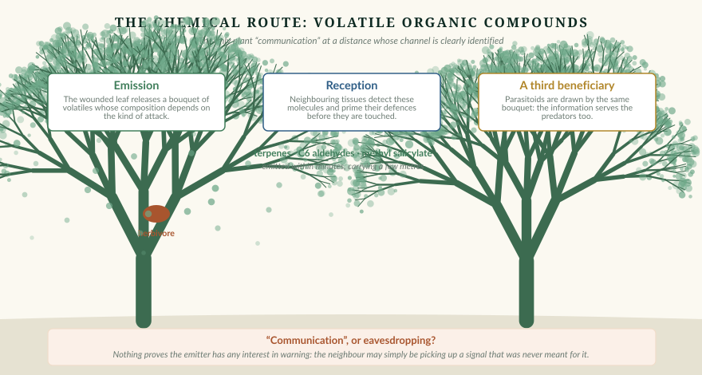
Fig. 4.1. La voie chimique. Trois acteurs : la plante attaquée qui émet, la voisine qui capte et se prépare, et le parasitoïde attiré par le même bouquet. Cette triple lecture est au cœur du débat sur le statut de cette « communication ».
Trois effets, trois bénéficiaires
Effet
Bénéficiaire
Statut
Signalisation interne — les volatils atteignent d'autres parties de la même plante et y déclenchent des défenses
La plante émettrice
Établi, et non problématique : c'est de l'auto-signalisation
Amorçage du voisinage — les tissus voisins détectent les volatils et amorcent leurs défenses avant d'être touchés
La plante voisine
Établi comme phénomène
Attraction de parasitoïdes — des insectes prédateurs de l'herbivore sont attirés par le même bouquet
La plante émettrice, indirectement
Établi ; c'est la « défense indirecte »
Les trois effets coexistent, et c'est ce qui rend l'interprétation difficile : on ne peut pas savoir lequel a été sélectionné.
✦ La question qui divise : communication ou écoute indiscrète ?
Pour qu'il y ait communication au sens de l'écologie comportementale, il faut que l'émetteur ait un bénéfice à émettre en direction du récepteur. Or ici, l'émettrice n'a aucun intérêt évident à ce que sa voisine — une concurrente pour la lumière, l'eau et les nutriments — se défende mieux.
L'hypothèse la plus parcimonieuse est donc que le bouquet volatil a été sélectionné pour l'auto-signalisation et pour l'appel aux parasitoïdes, et que la voisine ne fait qu'écouter aux portes — ce que la littérature anglophone nomme eavesdropping.
C'est une distinction majeure et elle est rarement faite : un signal peut être capté sans avoir été adressé. Cette phrase vaut, on le verra, bien au-delà de la botanique.
Ce que cela change pour un dispositif de mesure
La voie chimique est celle qui répond le mieux aux quatre critères posés au chapitre 1 — et c'est pourtant celle qu'aucun « arbre parlant » ne mesure. La raison est prosaïque : mesurer des composés volatils en extérieur, en continu, exige une chromatographie en phase gazeuse couplée à une spectrométrie de masse, c'est-à-dire un instrument de laboratoire coûteux, encombrant, et difficilement autonome.
Les capteurs de « qualité de l'air » à bas coût mesurent tout autre chose : des indices composites de composés organiques volatils, non spécifiques, non étalonnés en absolu, et fortement dépendants de la température et de l'humidité.
⚠️ Un avertissement pratique
Un capteur de COV de type grand public produit un indice sans dimension, souvent inutilisable sans plusieurs jours d'étalonnage adaptatif et sans sa bibliothèque logicielle propriétaire. Il ne mesure ni les terpènes ni le salicylate de méthyle en particulier.
Autrement dit : sur le canal le plus riche en information réelle, l'instrumentation accessible est la plus pauvre. C'est une ironie du domaine qu'il faut connaître avant d'acheter.
À retenir
Les volatils sont émis en minutes, portent sur quelques mètres, et leur composition dépend du type d'agression.
Trois effets établis : auto-signalisation, amorçage du voisinage, attraction de parasitoïdes.
Le statut « communication » est débattu : la voisine est une concurrente, l'émettrice n'a pas d'intérêt à la prévenir.
Un signal peut être capté sans avoir été adressé — l'écoute indiscrète est l'hypothèse la plus parcimonieuse.
C'est le canal le plus riche, et celui dont l'instrumentation accessible est la plus pauvre.
Le canal souterrain : le « Wood Wide Web » et son démontage
L'image la plus célèbre de l'écologie forestière contemporaine vient d'être soumise à un audit méthodique. Le résultat est instructif — non seulement pour ce qu'il dit des champignons, mais pour ce qu'il dit de la façon dont une métaphore peut rétroagir sur la science.
Fig. 4.2. Le mycélium existe, il est spectaculaire, et il est réellement associé aux racines. Le débat ne porte pas sur son existence.The root-like Mycelium of a fungus — FungiFriendly, CC BY-SA 4.0, Wikimedia Commons.
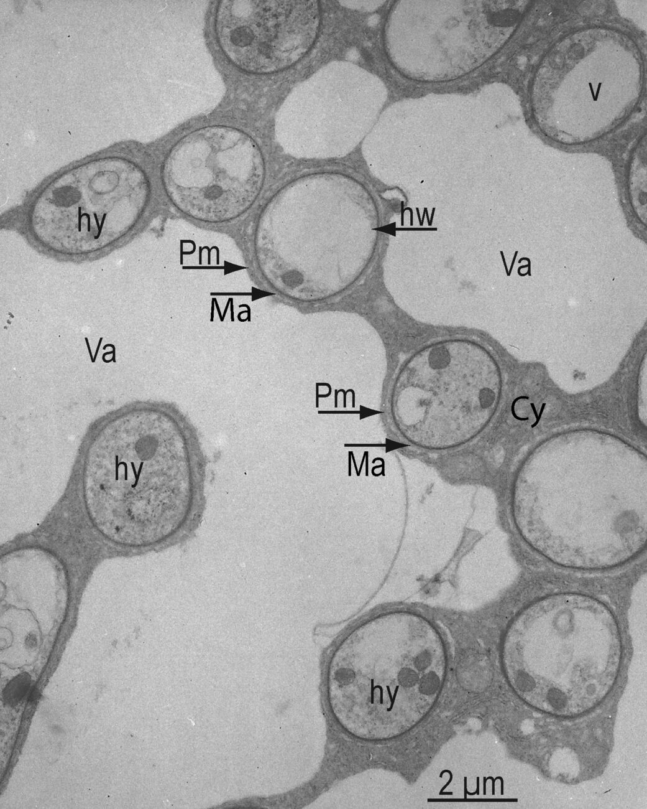
Fig. 4.3. Une mycorhize au microscope : l'interface réelle entre racine et champignon.Orchidoida mycorrhiza — Ingrid Kottke, CC BY-SA 4.0.
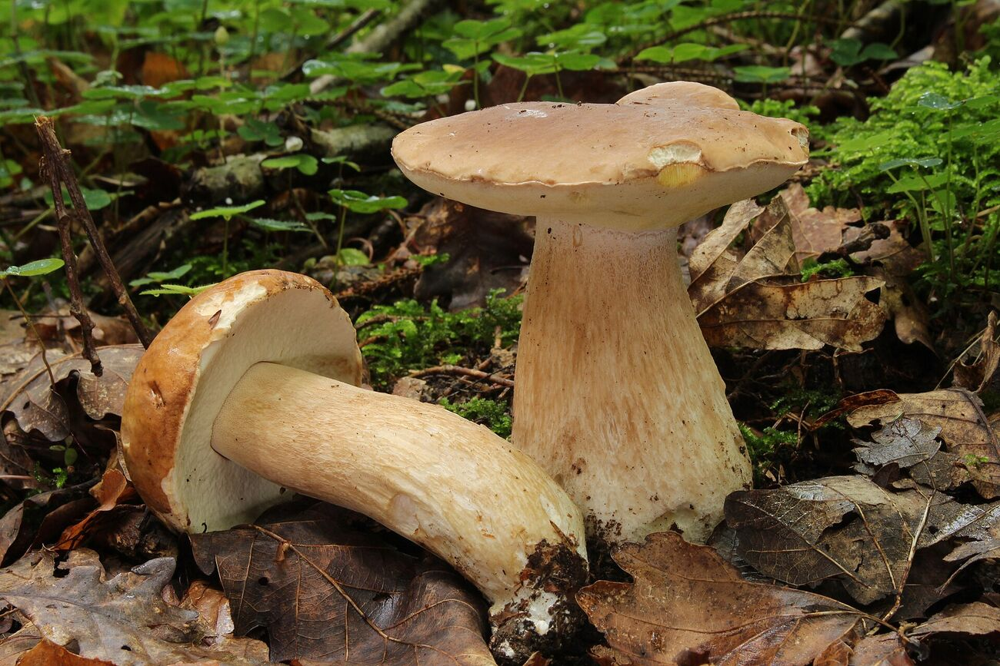
Fig. 4.4. Un champignon ectomycorhizien en situation. La symbiose est quasi universelle chez les arbres.Gemeine Steinpilz (Boletus edulis) — Holger Krisp, CC BY 3.0.
Ce qui est solidement établi
🔬 Les trois piliers
Simard, S. W., Perry, D. A., Jones, M. D., Myrold, D. D., Durall, D. M. & Molina, R. (1997), « Net transfer of carbon between ectomycorrhizal tree species in the field », Nature 388, p. 579-582. Le travail fondateur : un transfert net de carbone entre espèces d'arbres, sur le terrain.
Klein, T., Siegwolf, R. T. W. & Körner, C. (2016), « Belowground carbon trade among tall trees in a temperate forest », Science 352(6283), p. 342-344. Marquage isotopique au ¹³C de la canopée d'épicéas de quarante mètres ; transfert interspécifique bidirectionnel vers hêtre, mélèze et pin, via sphères racinaires chevauchantes. Le flux représente 40 % du carbone des racines fines, soit environ 280 kg par hectare et par an.
Kiers, E. T. et al. (2011), « Reciprocal rewards stabilize cooperation in the mycorrhizal symbiosis », Science 333(6044), p. 880-882. Plantes et champignons se récompensent mutuellement : la plante alloue plus de glucides aux meilleurs partenaires fongiques, le champignon plus de nutriments aux racines les plus généreuses.
✦ Un détail d'interprétation qui change tout
Le résultat de Kiers et al. est presque toujours présenté comme une preuve de « coopération » ou d'« entraide ». Les auteurs disent autre chose : le mutualisme est stable parce que le contrôle est bidirectionnel. Chaque partenaire peut sanctionner l'autre.
C'est un mécanisme de marché biologique, pas d'altruisme. La distinction n'est pas un pinaillage : un marché et un don n'ont ni les mêmes conditions de stabilité, ni les mêmes prédictions testables.
L'audit de 2023
Karst, J., Jones, M. D. & Hoeksema, J. D. (2023), « Positive citation bias and overinterpreted results lead to misinformation on common mycorrhizal networks in forests », Nature Ecology & Evolution 7(4), p. 501-511.
Les auteurs ont évalué systématiquement trois affirmations courantes. Voici leurs verdicts, tels qu'ils les formulent.
Affirmation évaluée
Verdict
Les réseaux mycorhiziens communs sont répandus dans les forêts
Insuffisamment étayé — les résultats des études de terrain varient trop, admettent des explications alternatives, ou sont de portée trop limitée pour permettre une généralisation
Des ressources transitent par ces réseaux et améliorent les performances des semis
Insuffisamment étayé — même motif
Les arbres matures envoient préférentiellement ressources et signaux de défense à leur descendance
Aucune preuve publiée et évaluée par les pairs
La troisième ligne est la plus dure de tout ce volume : l'affirmation la plus populaire du domaine — celle de l'« arbre-mère » — est celle qui n'a aucun support publié.
Le mécanisme du biais, quantifié
Le second volet de l'article est méthodologique, et il dépasse largement la question des champignons. Les auteurs ont examiné comment les résultats de ce domaine sont cités.
Constat : les affirmations non étayées ont doublé au cours des vingt-cinq dernières années dans la littérature. Un biais en faveur de la citation des effets positifs « peut obscurcir notre compréhension de la structure et de la fonction des réseaux mycorhiziens en forêt ».
Leur conclusion est sans détour : « Nous concluons que les connaissances sur les réseaux mycorhiziens communs sont actuellement trop clairsemées et trop incertaines pour éclairer la gestion forestière. »
✦ Ce qui rend cet article exemplaire
Les auteurs reconnaissent explicitement que certaines des citations abusives provenaient de leurs propres publications antérieures. Ils ne dénoncent pas un camp adverse : ils auditent le champ, eux inclus.
Et ils proposent quatre remèdes : concevoir de nouvelles expériences, exiger de meilleures preuves, envisager les explications alternatives, et être plus sélectifs dans la diffusion des affirmations. C'est un modèle d'autocritique disciplinaire.
Le débat n'est pas clos
Le dossier critique s'est élargi : Henriksson, N. et al. (2023), « Re-examining the evidence for the mother tree hypothesis », New Phytologist 239, p. 19-28 ; et des travaux sur les périls de la personnification végétale.
Réponse de l'autre bord : Simard, S. W., Ryan, M. & Perry, D. (2025), Frontiers in Forests and Global Change, DOI 10.3389/ffgc.2024.1512518. Argument central : même s'il existe un biais de citation, cela n'annule ni le fait que toutes les espèces d'arbres sont mycorhizo-dépendantes, ni les transferts démontrés.
✦ La position défendable, en trois lignes
Le transfert de carbone entre arbres via des réseaux ectomycorhiziens est documenté (Klein et al., 2016).
Sa généralité en forêt, son bénéfice net pour les receveurs, et surtout sa direction préférentielle vers la descendance ne le sont pas.
Le « Wood Wide Web » est une métaphore journalistique qui a rétroagi sur la littérature scientifique par biais de citation — et c'est précisément ce que Karst et al. ont quantifié.
⚠️ Une précision de référence
Le titre exact de l'article de Karst et al. est « …lead to misinformation on common mycorrhizal networks in forests » — et non « …lead to misinformed conclusions about wood-wide webs », variante qui circule. Un rectificatif d'auteur a par ailleurs été publié : Nature Ecology & Evolution 7:623, DOI 10.1038/s41559-023-02035-7.
✨ Ce que cette affaire dit de nous
Pourquoi l'image de l'arbre-mère a-t-elle circulé si vite et si loin ? Parce qu'elle est belle, et parce qu'elle console. Elle propose une forêt qui fonctionne comme une famille bienveillante, dans un monde où l'on cherche désespérément des modèles de coopération.
La forêt réelle — un marché biologique où chaque partenaire sanctionne l'autre, où les transferts existent sans direction privilégiée, où la coopération est stable parce que la trahison est punie — est moins consolante. Elle est aussi plus intéressante, et elle a l'avantage d'exister.
À retenir
Transfert de carbone entre arbres : établi, ≈ 280 kg·ha⁻¹·an⁻¹ (Klein et al., 2016).
Kiers et al. décrivent un marché biologique à contrôle bidirectionnel, non de l'altruisme.
Karst et al. (2023) : deux affirmations insuffisamment étayées, une sans aucune preuve publiée — l'arbre-mère.
Les affirmations non étayées ont doublé en vingt-cinq ans, par biais de citation.
Les auteurs incluent leurs propres publications dans la critique : modèle d'autocritique disciplinaire.
PartieV
Traduire en son
Trois familles de sonification, une définition canonique qui tranche, et l'examen sans complaisance de ce que mesurent réellement les appareils du commerce.
Les trois familles de sonification
Toute conversion de données en son appartient à l'une de trois familles. Savoir laquelle on emploie détermine ce qu'on a le droit de prétendre.
La discipline existe, elle a une communauté — l'International Community for Auditory Display, qui tient une conférence annuelle depuis 1992 et publie ses actes en accès libre — et elle a un ouvrage de référence intégralement disponible : Hermann, T., Hunt, A. & Neuhoff, J. G. (éds.) (2011), The Sonification Handbook, Logos Verlag, 586 pages.
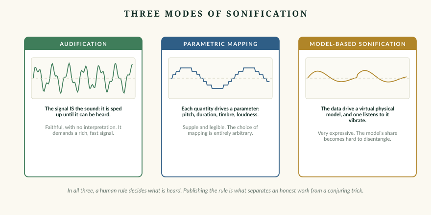
Fig. 5.1. Audification, mapping paramétrique, sonification modélisée. Dans les trois cas, c'est une règle humaine qui décide de ce que l'on entend. Publier la règle est ce qui distingue une œuvre honnête d'un tour de passe-passe.
Famille
Principe
Force
Faiblesse
Audification
La série temporelle est la forme d'onde, transposée jusqu'à l'audible
Aucune interprétation ajoutée ; fidélité maximale
Exige un signal riche et rapide ; inapplicable à une mesure au quart d'heure
Mapping paramétrique
Chaque dimension des données pilote un paramètre sonore
Souple, lisible, applicable à tout
Le choix du mapping est entièrement arbitraire — et détermine ce qui sera perçu
Sonification modélisée
Les données définissent un modèle physique virtuel que l'on excite
Très expressive, riche en texture
La part du modèle devient difficile à démêler de celle des données
La définition qui tranche
🔬 Point scientifique — le critère opératoire
Hermann, T. (2008), « Taxonomy and definitions for sonification and auditory display », Proceedings of ICAD 2008, Paris.
Définition canonique : la sonification est « la génération de son dépendante des données, lorsque la transformation est systématique, objective et reproductible ». Assortie de quatre conditions :
Le son reflète des propriétés ou relations objectives des données d'entrée.
La transformation est systématique — il existe une fonction de transfert définie.
La sonification est reproductible : mêmes données, même son.
Le système est utilisable avec d'autres jeux de données.
✦ Ce que ce critère permet de trancher
Un dispositif dont on ne peut ni décrire la fonction de transfert données→son, ni la rejouer à l'identique, ni l'appliquer à un autre jeu de données, n'est pas une sonification au sens de la discipline.
Il peut être excellent par ailleurs : c'est un instrument de musique à contrôleur biologique. Cette appellation est exacte, honorable, et vérifiable. Celle de « traduction du langage des plantes » ne l'est pas.
Ce critère a une vertu rare : il est applicable. Devant n'importe quel appareil, on peut le tester en trois questions — et obtenir une réponse.
Quatre conditions, dont la possibilité d'appliquer le système à d'autres jeux de données.
Ce qui ne les satisfait pas est un instrument à contrôleur biologique — appellation exacte et honorable.
Ce que mesurent réellement les appareils du commerce
Examen technique, sans procès d'intention. Ces appareils mesurent quelque chose de réel. Ce n'est simplement pas ce que leur communication laisse entendre.
Il existe depuis cinquante ans une famille d'appareils qui convertissent l'activité électrique d'une plante en musique. Ils ont des utilisateurs sincères et parfois des effets réels sur ceux qui les emploient. Ce chapitre ne conteste ni l'un ni l'autre : il examine ce que l'électronique fait.
Fig. 5.2. Un synthétiseur modulaire. La quantification sur gamme garantit la consonance — et écrase l'information.Eurorack Synthesizer — Matthew G Daniel, CC BY-SA 4.0.
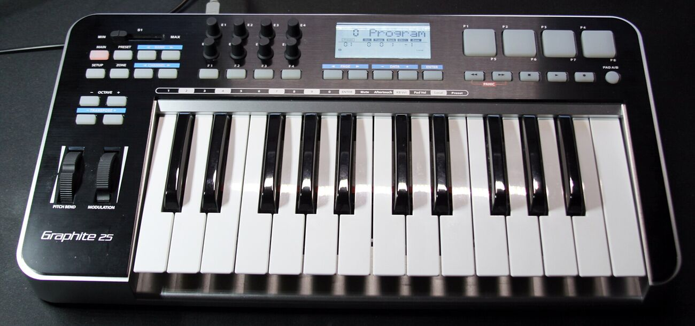
Fig. 5.3. Un clavier MIDI. Le protocole transporte des numéros de note : c'est ce qui rend possible d'y substituer des mots.Samson Graphite 25 MIDI keyboard — Morn, CC BY-SA 4.0.
La grandeur mesurée
Le fabricant le plus transparent du domaine le décrit lui-même sans détour dans sa documentation publique : l'appareil « mesure les micro-fluctuations de conductivité entre deux points d'une plante », et cette conductivité « est largement liée à la quantité d'eau présente entre ces deux points ».
Cette description est exacte et honnête. Traduisons-la en termes d'instrumentation.
Ce qui est mesuré
Ce que ce n'est pas
Une impédance entre deux électrodes de surface, par injection d'un courant faible
Un potentiel d'action
Largement déterminée par la teneur en eau du tissu et par l'état du contact
Un potentiel de variation
Mesure en ampérométrie : on injecte, on lit
Un potentiel systémique
—
Une potentiométrie haute impédance contre une référence impolarisable
Les potentiels d'action, de variation et systémiques sont des variations du potentiel transmembranaire, mesurées en potentiométrie. Ce n'est pas la même physique.
🔬 La filiation technique, et ce qu'elle implique
Le circuit de ces appareils est celui d'un psychogalvanomètre — c'est-à-dire l'électronique d'un polygraphe, ou d'un capteur de réponse électrodermale humaine, adaptée aux feuilles.
Ce n'est pas une accusation : c'est une filiation assumée, et même revendiquée, puisque plusieurs fabricants citent explicitement les expériences des années 1970 comme inspiration.
Mais cette filiation a une conséquence technique : un capteur de réponse électrodermale mesure principalement l'hydratation de surface et l'état du contact. C'est vrai sur une paume de main ; c'est vrai sur une feuille.
Ce qui domine physiquement le signal
L'impédance de contact électrode/cuticule — dépendante de la pression d'appui, du gel conducteur, du séchage progressif.
L'état d'hydratation du tissu — le fabricant le dit lui-même.
La polarisation d'électrode.
La température et l'humidité relative ambiantes.
Le couplage électromagnétique du corps de l'opérateur et du réseau à 50 Hz.
⚠️ Le point le plus dérangeant : le seuil
Dans le micrologiciel de ces appareils, un seuil de détection réglable — souvent un simple potentiomètre — détermine à lui seul la densité d'événements musicaux. Tourné dans un sens, la plante « joue » sans arrêt ; dans l'autre, elle se tait.
Aucune position n'est plus vraie que l'autre. L'expressivité perçue est un réglage humain, et non une propriété de la plante.
La quantification sur une gamme — souvent pentatonique — achève le travail : elle garantit que toute suite de notes sera consonante. Le résultat est agréable exactement dans la mesure où l'information a été écrasée.
L'absence de contrôles
Aucun de ces dispositifs commerciaux ne publie de contrôle « plante morte », « pot sans plante », « résistance équivalente », ni de test de reproductibilité entre appareils. Ce sont pourtant exactement les contrôles que Khait et al. ont dû mettre en œuvre — et publier — pour que leur résultat soit recevable.
Un fabricant reconnaît d'ailleurs publiquement n'avoir conduit aucune étude évaluée par les pairs, s'appuyant sur un sondage d'utilisateurs faisant état de relaxation, de connexion et d'inspiration ressenties. C'est une réponse honnête à une question qui n'était pas scientifique.
✦ Un cas à part
Le dispositif issu de la communauté italienne de Damanhur mérite une mention séparée, non par sévérité mais par exactitude : aucune publication évaluée par les pairs n'a pu être trouvée sur cet appareil, et les seules sources disponibles sont la fondation elle-même, ses revendeurs et la presse non spécialisée.
Signalons également, puisque cela relève du contexte d'évaluation d'une source : cette organisation affiche un partenariat avec une fondation promouvant l'hypothèse de pyramides bosniennes, thèse que la géologie a écartée. Ce n'est pas un argument sur l'électronique de l'appareil ; c'est une information sur le rapport de l'organisation aux méthodes de vérification.
Le test qui trancherait
✦ Une expérience simple, jamais publiée
Sonifier, avec la même chaîne et les mêmes réglages, un bruit blanc filtré d'amplitude comparable. Faire écouter les deux à l'aveugle.
Si l'auditeur ne distingue pas, la plante n'est pas la source de l'information musicale — et la beauté du résultat provient du mapping, de la quantification et de la réverbération, c'est-à-dire du travail de l'ingénieur.
Ce test coûte une heure. Il n'a, à notre connaissance, jamais été publié par aucun fabricant. Cette absence est en elle-même une information.
✨ Une remarque d'équité
Rien de ce chapitre n'implique que ces appareils soient inutiles. Un instrument de musique qui se joue à deux mains humaines n'est pas « faux » parce que le son vient des cordes et non du bois.
Ce qui est demandé ici est plus modeste : que l'appareil soit décrit pour ce qu'il est. « Instrument à contrôleur biologique » est exact, défendable, et n'enlève rien à l'expérience de qui s'en sert. C'est même la seule description qui la protège d'un démenti.
À retenir
Ces appareils mesurent une impédance de surface, largement déterminée par la teneur en eau et l'état du contact.
Ce n'est ni un potentiel d'action, ni un potentiel de variation : ce n'est pas la même physique.
Filiation technique assumée : l'électronique du psychogalvanomètre.
Le seuil de détection détermine seul la densité de notes : l'expressivité est un réglage humain.
Aucun contrôle négatif n'est publié par aucun fabricant. Le test du bruit blanc coûterait une heure.
À quoi ressemblerait une sonification honnête
Le critique qui ne propose rien est à moitié utile. Voici, concrètement, comment sonifier un signal végétal de façon défendable — sans rien perdre de la beauté du résultat.
Les chapitres précédents ont posé un critère exigeant. Il serait déloyal de s'arrêter là : la question pratique est de savoir si l'on peut le satisfaire tout en produisant quelque chose d'écoutable. La réponse est oui, et les éléments de solution existent déjà.
Cinq règles de conception
Conception
Les cinq règles d'une sonification défendable
1. Publier la fonction de transfert
Un tableau, une formule, ou quelques lignes de code : « l'humidité du sol entre 0,10 et 0,35 m³/m³ pilote la hauteur entre do3 et do5, linéairement ». C'est tout. Cette publication rend la sonification reproductible, donc conforme au critère ICAD.
2. Réserver une voie non quantifiée
La quantification sur une gamme rend le résultat consonant — et détruit l'information fine. La solution n'est pas d'y renoncer, mais de conserver au moins une voie continue : un bourdon dont la hauteur suit exactement la grandeur, sans arrondi. L'oreille entend la justesse et l'écart en même temps.
3. Sonifier aussi les voies de contexte
Si la température pilote un timbre et l'humidité une réverbération, l'auditeur entend quand une variation du signal principal coïncide avec une variation thermique. L'artefact devient audible au lieu d'être invisible.
4. Faire entendre le silence
Quand une donnée manque ou qu'un capteur est hors plage, produire un silence franc ou un signal de défaut explicite — jamais une interpolation. Un dispositif qui ne se tait jamais ne dit rien.
5. Publier la sonification du bruit
Diffuser, à côté de l'œuvre, la même chaîne appliquée à du bruit blanc de même amplitude. C'est l'équivalent sonore du « pot sans plante ». Le public entend lui-même la différence — ou son absence.
Le gain. Ces cinq règles n'appauvrissent pas le résultat : elles ajoutent des voies, du silence et un point de comparaison. Elles rendent l'œuvre plus riche, et accessoirement inattaquable.
Le modèle à suivre : un mapping isomorphe
Il existe un exemple de sonification biologique qui satisfait les trois critères — isomorphe, inversible, falsifiable — et il vaut d'être connu.
🔬 Point scientifique — la sonification des protéines
Qin, Z. & Buehler, M. J. (2019), Extreme Mechanics Letters 29:100460 ; Yu, C.-H., Qin, Z., Martin-Martinez, F. J. & Buehler, M. J. (2019), ACS Nano 13(7) ; Yu, C.-H. & Buehler, M. J. (2020), APL Bioengineering 4(1):016108.
Méthode : les modes normaux de vibration des vingt acides aminés sont calculés par chimie quantique, puis transposés dans le spectre audible par équivalence transpositionnelle — les rapports de fréquences sont conservés. Chaque acide aminé devient un accord, pas une note arbitraire. La structure tridimensionnelle module durée, tempo et densité.
Pourquoi cela satisfait les trois critères :
Isomorphe — une structure physique mesurable est préservée.
Inversible — on remonte de la musique à la séquence, puis au repliement prédit.
Falsifiable — les protéines générées par cette voie sont testées par modélisation moléculaire.
⚠️ Deux précisions pour éviter une erreur répandue
Premièrement : Buehler emploie effectivement les mots « langage » et « vocabulaire » à propos des protéines, mais au sens des modèles de langage protéiques, où une séquence d'acides aminés est traitée comme un langage formel. Aucun de ses travaux ne convertit des données biologiques en mots de langue naturelle prononcés.
Deuxièmement : la recherche documentaire menée pour ce volume n'a trouvé aucune sonification établie de l'ADN ou des protéines vers des phonèmes produisant de la parole intelligible. C'est un résultat négatif, affirmé comme tel : nous ne citerons donc aucune source sur ce point.
Un second modèle : la sonification de l'ADN
Temple, M. D. (2017), BMC Bioinformatics 18:221 ; et Temple, M. D. (2021), BMC Research Notes 14:273. Ces travaux mappent nucléotides, paires ou codons vers 4, 16, 64 ou 20 notes.
Ce qui les rend défendables : le mapping est structurellement motivé. La granularité du codon est la granularité fonctionnelle réelle du génome — trois bases codent un acide aminé. Et l'usage revendiqué est la détection de motifs par l'oreille, notamment de cadres de lecture ouverts : un objectif vérifiable, non la production de sens.
✦ La leçon transposable au végétal
Dans les deux cas, ce qui rend la sonification défendable n'est pas la modestie des prétentions : c'est que la structure du mapping est dictée par la structure de l'objet.
Appliqué à un signal végétal, cela donne une orientation claire. Ne cherchez pas à mapper « l'état de la plante » sur « une émotion ». Cherchez ce qui, dans le signal, a une structure propre — une périodicité, un spectre, un rapport entre voies — et faites porter le mapping là-dessus. Le rythme circadien, par exemple, est une structure réelle : la sonifier en tant que telle est honnête et parfaitement audible.
À retenir
Cinq règles : publier la fonction de transfert, garder une voie non quantifiée, sonifier le contexte, faire entendre le silence, publier le bruit.
Ces règles enrichissent l'œuvre au lieu de l'appauvrir.
La sonification des protéines (Buehler) satisfait les trois critères : isomorphe, inversible, falsifiable.
Buehler ne convertit jamais des données biologiques en mots prononcés — ne pas le lui attribuer.
Règle générale : faire porter le mapping sur une structure propre du signal, non sur une interprétation.
PartieVI
Traduire en mots
Ce que l'apprentissage automatique extrait réellement d'un signal végétal, et ce qu'un modèle de langage ajoute par-dessus — avec la mesure exacte de sa contribution.
Ce que l'apprentissage automatique extrait vraiment
Avant les modèles de langage, il y a eu les classificateurs. Leurs résultats sont solides, modestes et vérifiables — et ils fixent la borne supérieure de ce qu'un signal végétal contient.
Voici une façon rigoureuse de poser la question « que contient ce signal ? » : combien d'états distincts un classificateur peut-il discriminer à partir de lui seul ? C'est une mesure opératoire de l'information présente, indépendante de toute interprétation.
Les résultats établis
Travaux
Signal
Ce qui est discriminé
Performance
Simmi et al. (2020) Bioelectrochemistry 133
Électrome
Infection fongique
Détection avant symptôme visible, par entropie approchée
de Toledo et al. (2024) Plant Signal. Behav. 19(1)
Électrome
Stress salin
Jusqu'à 100 % d'exactitude (machine à vecteurs de support)
Tran et al. (2019) Sci. Rep. 9:17073
Électrophysiologie, hors cage de Faraday
Stress hydrique, rythme nycthéméral
Classification supervisée du statut physiologique
Khait et al. (2023) Cell 186(7)
Ultrasons 20-150 kHz
Espèce émettrice, type de stress
Discrimination établie
Quatre travaux, quatre signaux, un même constat : l'information est présente et extractible. C'est le socle solide du domaine.
✦ Ce que ces résultats fixent
Ils fixent une borne supérieure. Si le meilleur classificateur entraîné sur un signal parvient à distinguer trois ou quatre états physiologiques, alors ce signal contient au moins cette information — et rien n'autorise à supposer qu'il en contienne beaucoup plus.
Un dispositif qui prétend en tirer des énoncés riches, variés, nuancés, sur des sujets que le classificateur ne discrimine pas, produit donc nécessairement ce surplus ailleurs que dans le signal. Ce n'est pas un soupçon : c'est une contrainte informationnelle.
Pourquoi ces résultats sont solides
Quatre propriétés méthodologiques les distinguent de ce qui circule par ailleurs.
Une tâche définie. « Distinguer une plante en stress salin d'une plante témoin » est une question à laquelle on peut répondre juste ou faux. « Traduire l'état d'une plante » n'en est pas une.
Un jeu de test séparé. La performance est mesurée sur des données que le modèle n'a jamais vues.
Une matrice de confusion. On sait quelles erreurs le modèle commet, ce qui est souvent plus informatif que le taux global.
Une condition d'échec. Un classificateur qui tombe à 50 % sur deux classes équilibrées a échoué, et cela se voit immédiatement.
Ces quatre propriétés définissent ce qu'est une affirmation évaluable. Aucune n'est présente dans un dispositif qui produit du texte libre.
⚠️ Une limite qu'il faut aussi énoncer
Un classificateur atteignant 100 % d'exactitude sur un jeu de test ne démontre pas qu'il a « compris » quoi que ce soit. Il peut s'être appuyé sur un artefact corrélé à la condition : l'heure de la journée, la température de la salle, l'ordre de passage des échantillons.
C'est le problème du raccourci, bien connu en apprentissage automatique. Le remède est le même que partout dans ce livre : des conditions de contrôle, et des voies de contexte enregistrées en parallèle pour vérifier que le modèle ne s'appuie pas sur elles.
À retenir
La question « que contient ce signal ? » se mesure par le nombre d'états qu'un classificateur discrimine.
Résultats établis : infection fongique avant symptôme, stress salin jusqu'à 100 %, stress hydrique hors cage de Faraday.
Ces résultats fixent une borne supérieure de l'information présente.
Tout énoncé plus riche que ce que le classificateur discrimine est produit ailleurs que dans le signal.
Un classificateur très performant peut s'appuyer sur un artefact corrélé : les voies de contexte sont indispensables.
Les modèles de langage sur séries temporelles
La technique dominante est d'une simplicité désarmante : coller les chiffres dans un texte. Ses performances ont été mesurées, et le résultat est sévère.
Depuis 2023, un grand nombre de travaux tentent de faire commenter, prévoir ou annoter des séries temporelles par des modèles de langage. Le domaine est actif, publié, et — c'est heureux — il s'est déjà autoévalué.
La technique, et son plafond
La méthode dominante consiste à insérer les valeurs sous forme de texte dans l'invite. Les travaux de référence incluent Nepal et al. (2024) pour la narration de données de capteurs (arXiv:2411.04691), DailyLLM (arXiv:2507.13737) et SensorLLM (arXiv:2410.10624) pour l'alignement modèle-capteurs.
Le constat récurrent de ce corpus est sans ambiguïté : la méthode fonctionne mal au-delà de quelques centaines de pas de temps, et les sorties sont fréquemment génériques, inexactes ou mal ancrées dans les données.
🔬 Point scientifique — le résultat d'ablation
Tan, M., Merrill, M. A., Gupta, V., Althoff, T. & Hartvigsen, T. (2024), « Are Language Models Actually Useful for Time Series Forecasting? », NeurIPS 2024 (Spotlight), arXiv:2406.16964.
Les auteurs prennent trois méthodes populaires de prévision de séries temporelles fondées sur des modèles de langage, et procèdent à l'ablation : ils retirent le modèle, ou le remplacent par une simple couche d'attention.
Résultat : les performances ne se dégradent pas — et s'améliorent souvent. Un baseline trivial, qu'ils nomment PAttn, bat la plupart des architectures à base de modèle de langage.
C'est l'un des résultats les plus utiles de ce volume, parce qu'il fournit une méthode, et pas seulement un constat. L'ablation est la façon standard de mesurer la contribution d'un composant. Elle s'applique directement à tout dispositif de « traduction » végétale.
Le décodage sémantique : ce que le meilleur travail établit
Il existe un domaine où l'on décode réellement du langage à partir d'un signal biologique continu, et où le travail est fait avec rigueur : la reconstruction sémantique à partir d'enregistrements cérébraux non invasifs.
🔬 Point scientifique — la référence à connaître
Tang, J., LeBel, A., Jain, S. & Huth, A. G. (2023), « Semantic reconstruction of continuous language from non-invasive brain recordings », Nature Neuroscience 26, p. 858-866.
C'est exactement l'architecture que l'on imagine spontanément : signal continu → espace sémantique → séquences de mots. Mais le point capital est comment ils procèdent.
Ce n'est pas un plus-proche-voisin naïf. Un modèle de langage sert de prior génératif : il propose des continuations candidates, et le signal cérébral ne fait que noter et reclasser ces candidats.
Autrement dit : la grammaire et la fluidité viennent du modèle de langage ; seule la sélection vient du signal.
Les auteurs le mesurent explicitement, par des baselines et des tests de permutation. Et ils montrent que le décodage exige la coopération du sujet et s'effondre sous contre-mesures mentales — c'est-à-dire qu'ils ont construit les conditions dans lesquelles leur système doit échouer.
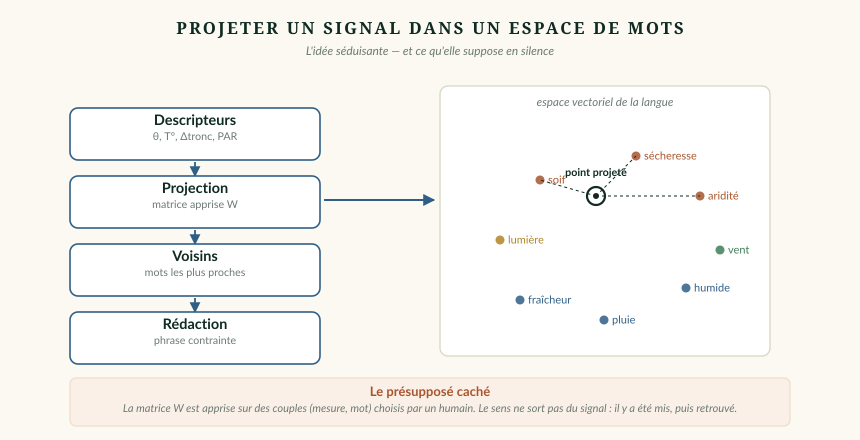
Fig. 6.1. L'idée séduisante : projeter un signal dans un espace vectoriel de mots et lire les voisins. Le présupposé caché est dans la matrice de projection : elle est apprise sur des couples (mesure, mot) choisis par un humain.
✦ Le critère de démarcation
Tang et al. ont fait ce qu'aucun dispositif de plante parlante n'a fait : spécifier à l'avance les conditions dans lesquelles leur système produit du non-sens.
C'est le critère. Un dispositif sémantique honnête doit dire quand il échoue. Celui qui ne le dit pas ne peut pas être évalué, donc ne peut rien établir — quelle que soit la beauté de ses sorties.
Sur l'inversion d'embeddings
Un travail connexe mérite mention, parce qu'il est souvent invoqué à tort. Morris, J. X., Kuleshov, V., Shmatikov, V. & Rush, A. M. (2023), Text Embeddings Reveal (Almost) As Much As Text (vec2text), arXiv:2310.06816, montrent qu'un plongement peut être reconverti en texte — via un modèle entraîné à itérer jusqu'à converger sur le point latent cible.
⚠️ Ce que ce résultat ne dit pas
Il prouve que l'inversion est possible quand le plongement contient réellement le texte — parce qu'il a été produit à partir de ce texte.
Il ne dit rien du cas où l'on projette un signal physiologique arbitraire dans cet espace. Dans ce cas, l'espace ne contient pas de texte à retrouver : on y place un point, et on lit les mots qui se trouvent à proximité — mots qui y étaient déjà, mis là par l'entraînement sur du texte humain.
Le sens ne sort pas du signal : il y a été mis, puis retrouvé.
À retenir
La technique dominante — insérer les valeurs en texte dans l'invite — plafonne vite et produit des sorties mal ancrées.
Tan et al. (2024) : retirer le modèle de langage ne dégrade pas les performances, et les améliore souvent.
Tang et al. (2023) : la grammaire vient du modèle, seule la sélection vient du signal.
Ils spécifient les conditions d'échec de leur système — critère de démarcation absent partout ailleurs.
L'inversion d'un plongement ne fonctionne que si le texte y était : le sens ne sort pas du signal.
La piste honnête : que la plante module le comment, jamais le quoi
Il existe une façon de faire « parler » une plante qui soit à la fois esthétiquement forte et épistémiquement défendable. Elle consiste à renoncer à une chose précise — et à en gagner une autre.
Récapitulons le problème. Mapper un signal vers des mots est arbitraire, non inversible et non falsifiable : rien dans le signal ne correspond à « soif ». Mais mapper un signal vers un paramètre continu est parfaitement légitime — c'est ce que fait toute sonification.
D'où la proposition : et si le signal pilotait la manière de dire, plutôt que ce qui est dit ?
Les espaces de style prosodique
🔬 Point scientifique — les jetons de style
Wang, Y. et al. (2018), « Style Tokens: Unsupervised Style Modeling, Control and Transfer in End-to-End Speech Synthesis », arXiv:1803.09017 ; et Stanton, D., Wang, Y. & Skerry-Ryan, RJ (2018), arXiv:1808.01410.
Ces travaux construisent un espace latent continu de style prosodique, appris sans étiquettes, à partir d'un corpus de parole. Chaque point de cet espace correspond à une manière de dire : plus lent, plus tendu, plus grave, plus hésitant.
Ce qui est décisif pour notre propos : c'est un espace continu, et il pilote la réalisation d'un texte, pas son contenu.
La proposition, formulée
✦ Mapper vers le style, jamais vers le lexique
Au lieu de signal → mot — arbitraire, non falsifiable —, on établit signal → vecteur de style : une correspondance continue vers continu, exactement comme en sonification paramétrique.
Le contenu lexical reste explicitement humain. Un texte fixe, ou un constat chiffré produit sous contrainte, ou même un poème assumé comme tel.
Résultat : la plante module le comment, jamais le quoi. Le signal est réellement audible dans la sortie — un auditeur attentif entend la tension monter — et aucun sens n'est fabriqué.
Pourquoi cette solution est supérieure
Critère
Mapping vers le lexique
Mapping vers le style
Fonction de transfert publiable
Possible mais arbitraire
Oui, et motivée — continu vers continu
Reproductible
Non, si un modèle génératif intervient
Oui
Le signal est-il perceptible dans la sortie ?
Non — le mot est discret, l'auditeur ne peut pas juger
Oui — la prosodie varie continûment
Peut-on attribuer à tort une intention ?
Oui, massivement
Beaucoup moins : le texte est annoncé comme humain
Force esthétique
Forte, mais fragile
Forte, et robuste à l'explication
La dernière ligne est la plus importante. Une œuvre dont l'effet survit à son explication est une œuvre solide.
✨ Pourquoi c'est aussi plus beau
Un dispositif où l'arbre dit des phrases place l'auditeur en position de destinataire : il attend un message, et il juge le contenu. Un dispositif où l'arbre colore une voix humaine place l'auditeur dans une position tout autre — celle de quelqu'un qui perçoit une présence dans la manière, sans qu'on lui ait rien affirmé.
C'est plus subtil, plus troublant, et infiniment plus proche de ce que décrivent les praticiens qui passent réellement du temps auprès des arbres. Ils ne rapportent presque jamais des phrases. Ils rapportent des qualités : une lenteur, une densité, une présence. C'est exactement ce qu'un mapping prosodique transmet.
Les limites de cette proposition
⚠️ Ce qu'elle ne résout pas
Le choix du mapping reste arbitraire. Décider qu'une humidité basse produit une voix plus tendue est une convention humaine, pas une propriété de l'arbre. La seule différence — mais elle est décisive — est que cette convention est publiable, reproductible et audible.
L'attribution reste possible. Un auditeur pourra toujours entendre de la souffrance dans une voix tendue. On ne supprime pas l'effet ELIZA ; on supprime seulement le prétexte qu'un dispositif lui fournissait.
Ce n'est pas une mesure. Cette proposition produit une œuvre honnête, non une contribution scientifique. Les deux sont légitimes ; il faut juste savoir laquelle on fait.
À retenir
Les espaces de style prosodique (Wang et al., 2018) fournissent un espace latent continu, appris sans étiquettes.
Proposition : signal → vecteur de style, le contenu lexical restant explicitement humain.
La plante module le comment, jamais le quoi — mapping continu vers continu, donc publiable et reproductible.
Le signal devient réellement perceptible dans la sortie, ce qui n'est pas le cas d'un mapping vers des mots.
Cela ne supprime pas l'effet ELIZA : cela supprime le prétexte que le dispositif lui fournissait.
PartieVII
Les frontières
Quatre confusions à démonter, un débat de vingt ans sur les mots, et la leçon que la réplication en aveugle a administrée à ce domaine.
Quatre confusions à démonter
Presque tous les abus de ce domaine se ramènent à quatre glissements. Les nommer une fois permet de les repérer partout.
1. Signalisation électrique ≠ langage
Un potentiel d'action phloémien transporte un événement — « il s'est passé quelque chose de dommageable quelque part » — à une vitesse de 1 à 10 cm/s. Sa richesse informationnelle n'a jamais été mesurée en bits par personne.
Il n'y a ni syntaxe, ni lexique, ni destinataire choisi, ni modulation du message selon l'interlocuteur. Hedrich et ses coauteurs emploient l'image du câble : une infrastructure de transmission, non une langue. L'image est bien choisie, et elle est modeste à dessein.
2. Réponse ≠ intention
Le nectar d'Oenothera devient plus sucré en trois minutes après un son de pollinisateur. C'est une chaîne mécanotransduction → réponse physiologique, vraisemblablement sélectionnée parce qu'elle augmente le succès de pollinisation.
Aucune donnée n'engage un état interne représentationnel. Une plante qui répond n'est pas une plante qui veut. Le thermostat de votre chaudière répond aussi, et personne ne lui prête d'intention — alors que sa boucle de rétroaction est, formellement, du même ordre.
3. Complexité ≠ conscience
L'électrome est complexe, non linéaire, sensible aux stimuli, et classifiable par apprentissage automatique. Il présente même des propriétés de criticité auto-organisée.
La météorologie aussi. L'atmosphère terrestre est un système dynamique non linéaire d'une complexité considérable, sensible aux conditions initiales, dont on extrait de l'information par apprentissage. Personne ne suggère qu'elle éprouve quelque chose.
✦ Pourquoi cet argument est décisif
La complexité est un très mauvais indicateur de vie intérieure, parce qu'elle est omniprésente dans des systèmes dont personne ne soupçonne l'expérience. Invoquer la complexité pour établir une conscience, c'est utiliser un critère qui classe positivement les cyclones.
Cela ne réfute pas l'hypothèse d'une expérience végétale — cela établit que la complexité ne l'établit pas.
4. Émission ≠ communication
La quatrième confusion est spécifique à la bioacoustique, et elle est la plus récente.
Khait et al. démontrent l'émission aérienne et son caractère informatif pour un observateur muni de microphones et d'un classificateur. Ils écrivent que ces sons « pourraient aussi être détectables par d'autres organismes » — au conditionnel, et c'est une formulation prudente et correcte.
Nardini et al. (2024) et Son et al. (2024) tranchent : la preuve expérimentale d'un rôle dans la communication plante-animal ou plante-plante fait défaut. « Aucune donnée ne soutient l'existence d'une communication acoustique de plante à plante. »
⚠️ La formulation juste
Le son de cavitation est très probablement un sous-produit physique de la rupture d'une colonne d'eau — comme un craquement de parquet qui sèche.
Informatif pour qui l'écoute. Non émis pour être écouté.
Cette distinction est exactement la même que celle du chapitre 9 sur les composés volatils : un signal peut être capté sans avoir été adressé. C'est la phrase la plus utile de tout ce volume, et elle vaut bien au-delà de la botanique.
À retenir
Signalisation ≠ langage : ni syntaxe, ni lexique, ni destinataire ; une infrastructure, pas une langue.
Réponse ≠ intention : une boucle de rétroaction n'est pas un vouloir.
Complexité ≠ conscience : le critère classerait positivement les cyclones.
Émission ≠ communication : un signal peut être capté sans avoir été adressé.
Le débat sur la conscience végétale
Vingt ans de controverse, trente-six signataires, et un désaccord qui ne porte pas sur les faits mais sur les mots — ce qui ne le rend pas moins important.
En 2006, Brenner, Stahlberg, Mancuso, Vivanco, Baluška & Van Volkenburgh proposent dans Trends in Plant Science 11(8), p. 413-419, un programme de recherche sous le nom de plant neurobiology : les plantes intègrent l'information environnementale via signaux électriques longue distance, transport d'auxine et molécules dites « neuronales ».
La réponse arrive l'année suivante, et elle est massive. Alpi et al. (2007), « Plant neurobiology: no brain, no gain? », Trends in Plant Science 12(4), p. 135-136, réunit trente-six signataires, dont plusieurs des plus grands noms de la physiologie végétale.
🔬 L'argument d'Alpi et al.
Le préfixe « neuro- » a toujours désigné, en biologie, l'appareil physiologique et anatomique qui permet aux animaux de se comporter — cerveaux et systèmes nerveux. Les plantes n'en possèdent pas. Les analogies revendiquées — synapses, neurotransmetteurs — ne sont pas étayées par des structures homologues.
Ce n'est pas un argument d'autorité : c'est un argument sur la charge sémantique des mots, et sur ce qu'un lecteur conclura en les lisant.
Le débat se poursuit : Taiz, Alkon, Draguhn, Murphy, Blatt, Hawes, Thiel & Robinson (2019), « Plants Neither Possess nor Require Consciousness », Trends in Plant Science 24(8), p. 677-687 ; puis les réponses de Calvo & Trewavas (2020) et la mise au point de Mallatt, Blatt, Draguhn, Robinson & Taiz sur la « conscience végétale ».
Le cas des neurotransmetteurs
Un exemple concret permet de voir précisément où le glissement s'opère. Les plantes synthétisent effectivement des molécules que nous appelons « neurotransmetteurs » chez l'animal :
le glutamate, dont les récepteurs végétaux sont apparentés aux récepteurs NMDA de nos synapses, et jouent un rôle démontré dans la propagation du signal de blessure ;
l'acide gamma-aminobutyrique, qui s'accumule en quelques secondes sous stress ;
la sérotonine et la mélatonine, impliquées dans la sénescence et la réponse au stress oxydatif ;
la dopamine et l'acétylcholine, présentes mais aux fonctions moins clairement établies.
⚠️ Le sophisme par déplacement de contexte
Une molécule n'a pas de fonction en soi ; elle a la fonction que lui donne le réseau qui l'emploie. L'ATP transporte de l'énergie chez la bactérie et sert aussi de neurotransmetteur chez l'humain — c'est la même molécule, deux rôles.
Le fait qu'une plante fabrique de la sérotonine ne dit rien sur son humeur, pas plus que le fait qu'une banane en contienne. L'argument « les plantes ont de la dopamine, donc elles ressentent » est un sophisme par déplacement de contexte.
Il faut refuser de l'employer même quand il sert la cause qu'on défend. Un argument invalide ne devient pas valide parce que sa conclusion nous plaît.
✦ Ce que ce débat apprend
Aucun des trente-six signataires d'Alpi et al. ne conteste que les plantes propagent des signaux électriques. Le désaccord ne porte pas sur les faits, il porte sur les mots.
Et ce n'est pas une querelle de spécialistes : dans un domaine où la vulgarisation amplifie tout, le choix du vocabulaire détermine ce que des millions de lecteurs concluront. Écrire « la plante décide » plutôt que « la plante répond » change le lecteur, pas la plante.
À retenir
Programme de « neurobiologie végétale » (2006) ; réponse de 36 signataires (2007) ; débat toujours ouvert.
L'argument porte sur la charge sémantique du préfixe « neuro- », non sur les données.
Les plantes synthétisent bien du glutamate, du GABA, de la sérotonine.
Une molécule a la fonction que lui donne le réseau qui l'emploie : le partage de molécules ne démontre aucun partage d'expérience.
Un argument invalide ne devient pas valide parce que sa conclusion nous plaît.
PartieVIII
Reproduire et pratiquer
Étude de reproductibilité des principaux résultats, et un atelier pour mesurer soi-même un canal — le plus accessible des cinq.
Étude de reproductibilité
Quels résultats de ce volume tiendraient si l'on tentait de les refaire ? La question n'est pas rhétorique : dans un cas au moins, quelqu'un a essayé.
La reproductibilité n'est pas un idéal abstrait : c'est une propriété qu'on peut évaluer résultat par résultat, à partir de critères explicites. Appliquons-les au corpus de ce volume.
Grille d'évaluation
Résultat
Protocole publié
Données publiées
Contrôles
Répliqué
Coût de réplication
Toyota et al. 2018 voie du glutamate
Oui
Partiel
Excellents — mutants, restauration
Voies confirmées par d'autres équipes
Élevé — lignées mutantes, imagerie
Khait et al. 2023 ultrasons
Oui, détaillé
Oui, déposées
Excellents — pot sans plante
Pas encore indépendamment
Moyen — chambre anéchoïque, micro ultrason
Veits et al. 2019 nectar et son
Oui
Partiel
Bons — contrôles de fréquence
Contesté sur l'interprétation
Faible — accessible à un laboratoire modeste
Klein et al. 2016 transfert de carbone
Oui
Partiel
Bons
Non — dispositif lourd
Très élevé — marquage isotopique en canopée
Souza et al. électrome
Oui
Variable
Moyens
Partiellement, par la même équipe
Faible — accessible en atelier
Tran et al. 2019 hors cage de Faraday
Oui
Non
Bons
Non
Moyen
Appareils du commerce
Non
Non
Aucun
Sans objet
—
La dernière ligne est la seule où toutes les cases sont vides. C'est aussi la seule catégorie que l'on peut acheter.
Le cas d'école : quand quelqu'un a vraiment essayé
Un épisode mérite d'être exposé en détail, parce qu'il montre le mécanisme correcteur de la science en action, du début à la fin — ce qu'on voit rarement.
En 2016, une équipe publie un résultat spectaculaire : un conditionnement associatif de type pavlovien chez le pois, dans un labyrinthe en Y. Une plante apprendrait à associer un stimulus neutre — un souffle d'air — à l'arrivée de la lumière, et à s'orienter en conséquence. L'écho médiatique est considérable : c'est de l'apprentissage, chez un organisme sans neurone.
🔬 Le triptyque publié dans eLife
1. Markel, K. (2020), « Lack of evidence for associative learning in pea plants », eLife 9:e57614.
Tentative de réplication avec un effectif plus grand et une analyse entièrement en aveugle. Résultat : échec de réplication.
2. Gagliano et al. (2020), commentaire, eLife 9:e61141.
Le protocole de réplication est jugé inadapté : différences de dispositif, de conditions.
3. Markel, K. (2020), réponse au commentaire, eLife 9:e61689.
Les différences invoquées n'expliquent pas l'échec.
✦ Pourquoi ce triptyque est précieux
D'abord parce qu'il existe. Une tentative de réplication en aveugle, publiée dans une revue de premier plan, suivie d'un échange contradictoire publié : c'est le fonctionnement normal de la science, et il est rare de pouvoir le montrer d'un bout à l'autre.
Ensuite parce qu'il fournit une règle de prudence transférable : quand une revendication à fort retentissement médiatique ne résiste pas à une réplication en aveugle avec un effectif supérieur, cela justifie une prudence à l'égard de l'ensemble du corpus de la même équipe — y compris les affirmations de bioacoustique racinaire évoquées au chapitre 8.
Ce n'est pas une disqualification. C'est une pondération, et elle est méthodologiquement fondée.
Trois leçons pour le praticien
Le coût de réplication n'est pas corrélé à la solidité. Le résultat le plus solide de ce volume (Toyota et al.) est aussi l'un des plus coûteux à refaire ; le plus accessible (l'électrome) est aussi l'un des moins consolidés. On ne peut pas vérifier soi-même ce qui compte le plus.
L'analyse en aveugle est le facteur discriminant. Dans l'affaire du pois, la différence décisive entre l'étude originale et la réplication n'est pas le matériel : c'est que l'expérimentateur ne savait pas quelle condition il analysait.
L'absence de tentative de réplication n'est pas une validation. Plusieurs résultats de ce volume n'ont jamais été répliqués indépendamment — non parce qu'ils sont faux, mais parce que personne n'a essayé. Cela reste une inconnue, et il faut la traiter comme telle.
À retenir
Grille de reproductibilité : protocole, données, contrôles, réplication, coût.
Les appareils du commerce sont la seule catégorie où toutes les cases sont vides.
Le triptyque Markel / Gagliano / Markel dans eLife montre le mécanisme correcteur en entier.
L'analyse en aveugle est le facteur discriminant, davantage que le matériel.
Absence de réplication ≠ validation : c'est une inconnue.
Atelier : mesurer un canal soi-même
Parmi les cinq canaux, un seul est mesurable sérieusement avec des moyens modestes — et ce n'est pas celui qu'on croit. Voici comment s'y prendre.
L'intuition envoie vers le canal électrique, parce que c'est celui des appareils vendus. C'est une erreur : c'est le plus difficile. Examinons les cinq canaux du point de vue de l'accessibilité réelle.
Microphone ultrasonore, acquisition à 500 kHz, chambre silencieuse
Élevée — le matériel coûte plus qu'un ordinateur
Chimique
Chromatographie en phase gazeuse couplée à la spectrométrie de masse
Inaccessible hors laboratoire
Souterrain
Marquage isotopique, analyse de racines
Inaccessible
Hydraulique
Deux sondes de température, une résistance chauffante, un convertisseur
Modérée — et parfaitement réalisable
Le canal hydraulique — le flux de sève — est de loin le plus accessible, et c'est aussi celui dont les données sont les plus directement interprétables.
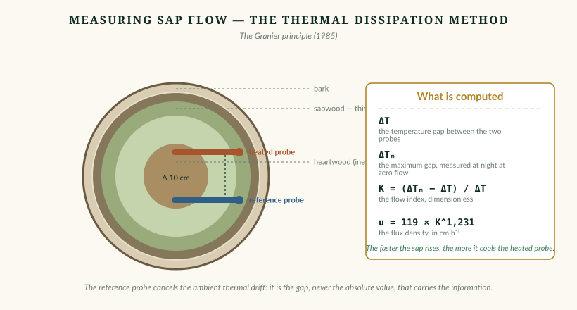
Fig. 8.1. La méthode de dissipation thermique. Deux sondes dans l'aubier, l'une chauffée, l'autre de référence. Plus la sève monte, plus elle refroidit la sonde chauffée. C'est l'écart, jamais la valeur absolue, qui porte l'information.
Atelier
Mesurer la transpiration d'un arbre
Durée un week-end de montage, une saison de mesureCanal hydrauliqueDifficulté modérée
Principe
Deux sondes sont insérées dans l'aubier, l'une au-dessus de l'autre, distantes d'environ dix centimètres. La sonde amont est chauffée à puissance constante ; la sonde aval sert de référence thermique. La sève qui monte refroidit la sonde chauffée, d'autant plus qu'elle circule vite.
Les grandeurs
ΔT
Écart de température mesuré entre les deux sondes
ΔTm
Écart maximal, mesuré de nuit à flux quasi nul
K = (ΔTm − ΔT) / ΔT
Indice de flux, sans dimension
u = 0,0119 · K1,231
Densité de flux, en cm·h⁻¹
Attention au facteur cent. Le coefficient de Granier s'écrit de plusieurs façons selon l'unité visée : 119·10⁻⁶·K1,231 donne des m·s⁻¹ ; 0,0119·K1,231 des cm·h⁻¹ ; 4,284·K1,231 des dm·h⁻¹. Les quatre écritures circulent dans la littérature, et les confondre produit des erreurs d'un facteur cent. L'exposant, lui, vaut 1,231 dans tous les cas.
Ce que vous observerez
Un cycle journalier net : flux nul la nuit, montée au lever du soleil, maximum en début d'après-midi, décroissance le soir.
Une corrélation forte avec le déficit de saturation de l'air — c'est-à-dire avec la soif de l'atmosphère, non avec celle de l'arbre.
Un effondrement par temps couvert, et une réponse nette à la pluie.
En cas de sécheresse, une fermeture stomatique visible : le flux plafonne alors que le déficit de saturation continue d'augmenter. C'est l'arbre qui ferme ses stomates pour éviter la cavitation.
Ce que ce protocole a de supérieur à un capteur bioélectrique. Les données sont directement interprétables. Le point 4 en particulier est une observation physiologique réelle : vous voyez un arbre arbitrer entre transpirer et se protéger. Aucune interprétation n'est nécessaire, et aucun modèle de langage n'ajouterait quoi que ce soit.
Les pièges, documentés
Gradients thermiques naturels du tronc : 0,3 à 3,5 °C sur huit à dix centimètres, induisant des erreurs de flux supérieures à 100 %. Parade validée : chauffage cyclique, environ 45 minutes en marche pour 15 à l'arrêt — ce qui divise en outre la consommation par quatre.
Sonde débordant de l'aubier : si la sonde atteint le duramen inerte, la sous-estimation peut atteindre 50 %. Il faut connaître l'épaisseur d'aubier de l'espèce.
Biais systématique : la méthode sous-estime, parfois fortement — jusqu'à −60 % sur certaines espèces. Une méta-analyse portant sur 290 calibrations conclut que la dissipation thermique a une exactitude médiocre mais une bonne linéarité.
Conséquence à accepter d'emblée : sans calibration sur l'espèce étudiée, vous mesurez un flux relatif, non un débit absolu. C'est amplement suffisant pour observer les rythmes et les réponses — et c'est ce que ce protocole vise.
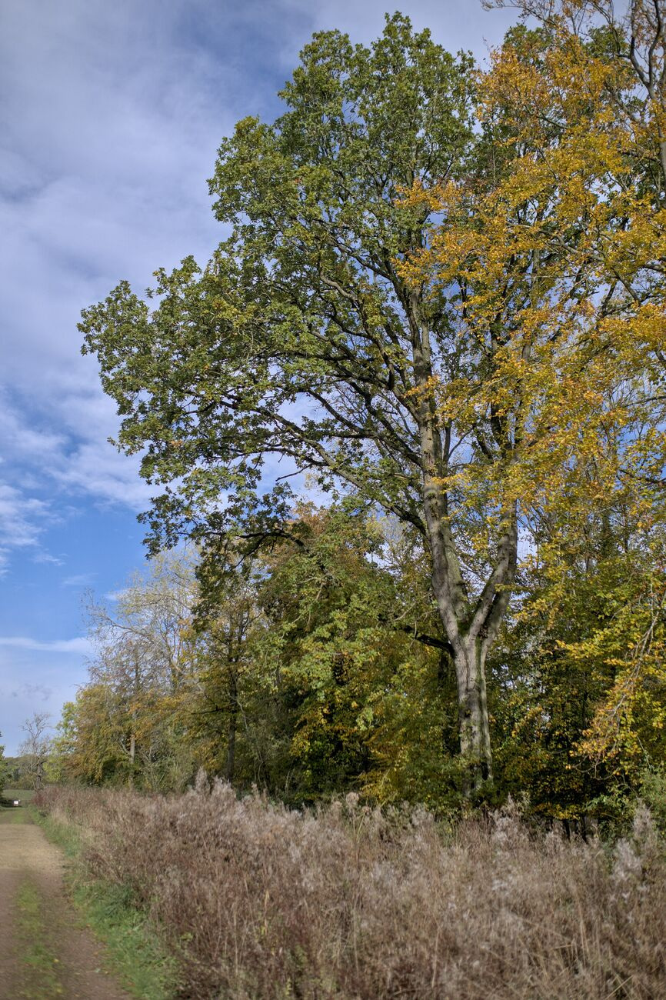
Fig. 8.2. Une chênaie. Chaque arbre y remonte, chaque jour d'été, plusieurs centaines de litres d'eau sous tension négative — en silence.A Woodland Oak - geograph.org.uk - 7645811 — Bob Harvey, CC BY-SA 2.0, Wikimedia Commons.
✨ Ce que cet atelier donne
Au bout d'une saison, vous aurez une courbe. Elle montrera un arbre qui se réveille chaque matin, travaille toute la journée, se repose la nuit, et ferme ses stomates quand il a trop soif.
Ce n'est pas un message. C'est un comportement, mesuré, daté, quantifié — et infiniment plus proche d'une rencontre réelle avec cet arbre-là que n'importe quelle phrase qu'une machine aurait pu lui prêter.
À retenir
Le canal le plus accessible n'est pas l'électrique mais l'hydraulique : deux sondes, une résistance chauffante.
Indice K, puis u = 0,0119·K1,231 en cm·h⁻¹. Exposant 1,231 dans tous les cas ; attention au facteur cent selon l'unité.
Piège majeur : les gradients thermiques naturels du tronc. Parade : chauffage cyclique 45/15 min.
Sans calibration par espèce, on mesure un flux relatif — suffisant pour les rythmes et les réponses.
Les données sont directement interprétables : aucun modèle de langage n'y ajouterait quoi que ce soit.
Annexes
Annexes
Glossaire raisonné, bibliographie intégrale, index détaillé et crédits iconographiques.
Glossaire raisonné
67 entrées. Chaque terme est donné avec sa définition, son contexte d'emploi dans cet ouvrage et, lorsqu'il y a lieu, l'écueil qu'il faut éviter — car dans ce domaine, la plupart des erreurs sont des erreurs de vocabulaire.
A
Ablation (test d')méthode
Procédure consistant à retirer un composant d'un système pour mesurer sa contribution réelle aux performances.
Appliquée à un dispositif de plante parlante : remplacer le signal du capteur par un tirage aléatoire de même distribution, puis faire écouter les deux à l'aveugle.
Écueil — Un taux de reconnaissance proche de 50 % signifie que le signal n'apportait rien.
Acropètebiologie végétale
Se dit d'une propagation qui va de la base vers le sommet de la plante.
Les potentiels de variation présentent une asymétrie directionnelle : la propagation acropète est plus rapide que la basipète.
Affichage auditifsonification
Terme générique désignant toute présentation d'information par le son (auditory display).
La communauté internationale du domaine (ICAD) organise une conférence annuelle depuis 1992, dont les actes sont en accès libre.
Agrégationinstrumentation
Réduction d'un ensemble de mesures à une valeur unique — moyenne, médiane, extrêmes — sur une fenêtre de temps.
Indispensable pour transmettre par radio longue portée, où le débit se compte en dizaines d'octets par message.
Écueil — Après agrégation, le modèle de langage ne voit jamais le signal, mais un résumé de résumé.
Allélopathiebiologie végétale
Influence biochimique d'une plante sur une autre, par libération de composés dans le milieu.
Voie d'interaction distincte des composés volatils aériens : elle passe par le sol et les exsudats racinaires.
Amplificateur d'instrumentationélectronique
Amplificateur différentiel à très haute impédance d'entrée et fort taux de réjection du mode commun.
Indispensable en électrophysiologie végétale, où l'impédance de source atteint plusieurs mégaohms.
Écueil — Un amplificateur ordinaire charge la source et modifie ce qu'il prétend mesurer.
Anthropomorphismeépistémologie
Attribution de caractères humains — intentions, émotions, langage — à un être non humain ou à un objet.
Ce n'est pas une erreur de raisonnement mais un mode de perception par défaut, documenté depuis Weizenbaum (1966).
Écueil — Le combattre entièrement est vain ; l'utile est de savoir quand il opère.
Anti-repliement (filtre)instrumentation
Filtre passe-bas analogique placé avant le convertisseur analogique-numérique.
Il supprime les composantes de fréquence supérieure à la moitié de la fréquence d'échantillonnage.
Écueil — Un filtrage numérique après conversion ne corrige pas le repliement : l'information est déjà perdue et mélangée.
Apoplastebiologie végétale
Ensemble des espaces extracellulaires d'un tissu végétal : parois, lacunes, vaisseaux.
C'est en grande partie par l'apoplaste que circule le courant lors d'une mesure d'impédance sur feuille.
Artefactinstrumentation
Variation enregistrée qui ne provient pas du phénomène étudié mais de la chaîne de mesure ou de l'environnement.
Sept artefacts dominent en extérieur : dérive d'électrode, potentiel d'écoulement, blessure d'insertion, dérive thermique, humidité de surface, mouvement, couplage secteur.
Écueil — Un artefact rythmé est indiscernable d'un rythme biologique sans voies de contexte.
Attributionépistémologie
Opération mentale par laquelle on assigne une origine, une intention ou une auteurité à un énoncé.
Le cœur du problème traité par cette série : l'attribution est déclenchée par la forme grammaticale — la première personne —, indépendamment du mécanisme réel.
Audificationsonification
Technique consistant à lire directement une série temporelle comme une forme d'onde sonore, généralement après accélération.
La plus fidèle des trois familles de sonification : aucune interprétation n'est ajoutée.
Écueil — Exige un signal riche et rapide ; inapplicable à une mesure toutes les quinze minutes.
B
Backster (effet)histoire des sciences
Affirmation, formulée en 1966 par Cleve Backster, que des plantes reliées à un polygraphe réagiraient aux intentions humaines.
Réfuté en conditions contrôlées par Horowitz, Lewis & Gasteiger (1975), Science 189, p. 478-480.
Écueil — Les tracés observés s'expliquent par l'électricité statique, les mouvements et l'humidité.
Basipètebiologie végétale
Se dit d'une propagation qui va du sommet vers la base de la plante.
Biais de citationépistémologie
Tendance à citer préférentiellement les travaux qui confirment une hypothèse populaire, au détriment des résultats nuls ou contraires.
Quantifié pour les réseaux mycorhiziens par Karst, Jones & Hoeksema (2023) : les affirmations non étayées ont doublé en vingt-cinq ans.
Biais de confirmationépistémologie
Tendance à rechercher, retenir et interpréter l'information dans le sens de ses attentes préalables.
En observation de terrain, il opère surtout par sélection : on retient la séance où « ça a marché ».
Écueil — Le remède n'est pas la vigilance mais le pré-enregistrement du protocole.
Bioacoustique végétalebiologie végétale
Étude des sons émis et perçus par les plantes.
L'émission de sons sous stress est démontrée (Khait et al., Cell, 2023) ; le mécanisme — cavitation xylémique — est compris depuis 1966.
Écueil — Émission ≠ communication. Aucune preuve ne soutient une communication acoustique de plante à plante.
Biofeedbackphysiologie · technique
Dispositif restituant en temps réel à un sujet une grandeur physiologique habituellement inaccessible à sa conscience.
Le terme est souvent employé abusivement pour les appareils de sonification végétale.
Écueil — Il n'y a pas de feedback si la plante ne perçoit pas le retour : la boucle n'est jamais démontrée.
C
Cambiumbiologie végétale
Assise de cellules en division située juste sous l'écorce, responsable de la croissance en diamètre.
Toute perforation du cambium ouvre une porte aux pathogènes : c'est pourquoi visser ou clouer dans un tronc est proscrit.
CASA (paradigme)sciences cognitives
Computers Are Social Actors : les humains appliquent aux machines des règles sociales sans y penser.
Établi par Reeves & Nass (1996) et Nass & Moon (2000).
Écueil — L'effet persiste chez des sujets qui affirment par ailleurs, sincèrement, que les machines n'ont ni intentions ni émotions.
Cavitationbiophysique
Rupture de la colonne d'eau dans un vaisseau du xylème, sous l'effet d'une tension trop forte.
Le vaisseau se vide — embolie — et la détente élastique produit un clic ultrasonore de 20 à 100 kHz.
Écueil — Toutes les émissions acoustiques d'un arbre ne sont pas de la cavitation : le bois qui se retire, l'écorce qui sèche et le vent en produisent aussi.
Communication facilitéepsychologie
Méthode où un « facilitateur » soutient la main d'une personne non verbale désignant des lettres sur un clavier.
Wegner, Fuller & Sparrow (2003) ont montré par test croisé que le message provient du facilitateur, par effet idéomoteur, et que celui-ci attribue sincèrement l'auteurité à l'autre.
Écueil — Structure identique à celle d'un dispositif de plante parlante : le précédent le plus éclairant du domaine.
Composés organiques volatilsbiologie végétale
Molécules émises dans l'air par les tissus végétaux, notamment après blessure : terpènes, aldéhydes en C6, salicylate de méthyle.
Seule voie d'interaction végétale à distance dont le canal soit clairement identifié et le mécanisme documenté.
Écueil — Rien ne prouve que l'émettrice ait un intérêt à prévenir : la voisine capte peut-être un signal qui ne lui était pas destiné.
Couplage capacitifélectronique
Transfert d'énergie entre deux conducteurs séparés par un isolant, sans contact direct.
Explique qu'un montage haute impédance « réagisse » à l'approche d'une personne : le corps humain est un conducteur couplé au réseau à 50 Hz.
Crescographehistoire des sciences
Appareil conçu par Jagadish Chandra Bose pour amplifier optiquement et enregistrer la croissance des plantes.
Emblème de la première électrophysiologie végétale. Exemplaires conservés au Bose Institute de Kolkata.
D
Dendromètreinstrumentation
Capteur mesurant les variations de circonférence ou de diamètre d'un tronc, au micromètre près.
Révèle le cycle journalier de contraction diurne et de regonflement nocturne.
Écueil — Ne figure dans aucune source décrivant le dispositif de 2025, contrairement à ce qui est souvent affirmé.
Dériveinstrumentation
Évolution lente et systématique d'une mesure, sans rapport avec la grandeur mesurée.
Sur une électrode métallique nue, la dérive des premières heures dépasse couramment la totalité du signal utile.
Écueil — Conséquence : seules les variations rapides sont exploitables, jamais le niveau absolu.
Descripteurtraitement du signal
Grandeur calculée résumant une propriété d'un signal : valeur courante, pente, variance, énergie spectrale.
Bloc escamoté par la plupart des dispositifs commerciaux — et pourtant seul moyen de savoir à quoi le système a réagi.
Double aveugleméthode
Protocole dans lequel ni le sujet ni l'expérimentateur ne connaissent la condition appliquée.
Dans nos protocoles, une forme allégée suffit : faire juger les enregistrements par une personne ignorant leur provenance.
E
Effet ELIZAsciences cognitives
Tendance à attribuer compréhension et intention à un programme informatique dont on connaît pourtant le mécanisme.
Nommé d'après le programme de Joseph Weizenbaum (1966), qui simulait un psychothérapeute par simple substitution de motifs.
Écueil — La connaissance du mécanisme ne protège pas de l'effet : expliquer ne suffit pas, il faut tester.
Électrode impolarisableélectronique
Électrode dont l'interface avec le milieu ne développe pas de tension parasite significative.
Types courants : argent/chlorure d'argent (Ag/AgCl), plomb/chlorure de plomb (Pb/PbCl₂).
Écueil — Une électrode métallique nue se polarise et dérive : c'est l'erreur de montage la plus répandue.
Électromebiologie végétale
Ensemble des oscillations électriques d'un organisme considérées comme un système dynamique plutôt que comme du bruit.
Terme forgé par analogie avec génome et protéome ; l'analyse spectrale et fractale de l'électrome permet de classer l'état physiologique d'une plante.
Écueil — Les mesures d'électrome sont solides ; leur interprétation en termes d'« attention » ou de « cognition » ne fait pas consensus.
Électrophysiologie végétalebiologie végétale
Étude des phénomènes électriques des tissus végétaux : potentiels de membrane, potentiels d'action, potentiels de variation.
Discipline centenaire, fondée par Burdon-Sanderson (1873) et Bose (1902).
Écueil — Ne pas confondre avec la mesure d'impédance des appareils grand public, qui relève d'une physique différente.
Emboliebiophysique
État d'un vaisseau conducteur rempli de gaz à la suite d'une cavitation, et devenu non fonctionnel.
F
Falsifiabilitéépistémologie
Propriété d'un énoncé qui spécifie à l'avance ce qui le réfuterait.
Critère de démarcation appliqué dans cette série : un système qui ne dit pas dans quelles conditions il produirait du non-sens n'est pas évaluable.
G
GLR (récepteurs)biologie végétale
Canaux ioniques de la famille glutamate receptor-like, apparentés aux récepteurs au glutamate animaux.
GLR3.3 et GLR3.6 sont nécessaires à la propagation du signal de blessure de feuille à feuille (Toyota et al., Science, 2018).
Écueil — Les potentiels d'action phloémiens sont initiés et propagés indépendamment de ces récepteurs : deux systèmes, pas un.
H
Hallucinationintelligence artificielle
Production, par un modèle génératif, d'un contenu plausible mais sans fondement dans ses entrées.
Ce n'est pas un dysfonctionnement mais le régime normal d'un modèle dont la fonction est de maximiser la plausibilité.
Écueil — Un modèle branché sur un capteur produira de belles phrases même sur du bruit blanc : c'est le premier test à faire.
I
Idéomoteur (effet)psychologie
Production de micro-mouvements involontaires, sous le seuil de la conscience, dirigés par une attente.
Mécanisme explicatif de la communication facilitée, de la planche Ouija et du pendule de radiesthésie.
Impédanceélectronique
Opposition d'un circuit au passage d'un courant alternatif, généralisant la résistance.
Ce que mesurent réellement la plupart des appareils de « musique des plantes » — largement déterminée par la teneur en eau du tissu et par l'état du contact.
Invite (système)intelligence artificielle
Texte d'instruction fourni à un modèle de langage pour définir son rôle, son registre et ses contraintes.
Véritable lieu de l'auteur dans un dispositif d'arbre parlant. Celle du projet de 2025 n'a jamais été publiée.
Écueil — Une invite sans bloc de contraintes produit systématiquement des énoncés non traçables.
Isomorphe (mapping)sonification
Correspondance qui préserve une structure mesurable de l'objet représenté.
Exemple conforme : la sonification des protéines par Buehler, qui conserve les rapports de fréquences des modes de vibration.
Écueil — Un mapping note → mot n'est pas isomorphe : rien dans le signal ne correspond au mot choisi.
J
Jasmonatebiologie végétale
Famille d'hormones végétales déclenchant les réponses de défense après blessure.
L'accumulation de jasmonoyl-isoleucine à distance de la blessure est le marqueur biochimique de la signalisation systémique.
M
Mapping paramétriquesonification
Technique associant chaque dimension des données à un paramètre sonore : hauteur, timbre, durée, intensité.
La plus répandue des trois familles de sonification.
Écueil — Le choix du mapping est entièrement arbitraire au regard des données — et détermine pourtant ce qui sera perçu.
Mapping sémantiquesonification · linguistique
Substitution de mots ou de phonèmes aux notes dans une sonification.
Mis en œuvre dès 2015 par Alexandre Ferran, avec un échantillonneur chargé d'environ cinquante mots.
Écueil — N'ajoute aucune information : ajoute de la référence. La charge interprétative migre du système vers l'auditeur.
Modèle de langageintelligence artificielle
Modèle statistique produisant du texte par prédiction du mot suivant, entraîné sur de vastes corpus.
Dans un arbre parlant, il fournit la syntaxe, le ton, les images et le sentiment exprimé — tout, sauf les nombres.
Écueil — Un modèle produit un texte plausible quelle que soit l'entrée : la plausibilité est une propriété du décodeur, pas une mesure de l'entrée.
Mycorhizebiologie
Association symbiotique entre les racines d'une plante et un champignon.
Quasi universelle chez les arbres. Le transfert de carbone entre arbres via des réseaux ectomycorhiziens est documenté (Klein et al., 2016).
Écueil — L'hypothèse de l'« arbre-mère » nourrissant préférentiellement sa descendance n'a aucune preuve publiée et évaluée par les pairs.
P
Phloèmebiologie végétale
Tissu conducteur transportant les produits de la photosynthèse.
Décrit comme un « câble vert » : c'est la voie de propagation des potentiels d'action végétaux.
Plasmodesmebiologie végétale
Canal traversant la paroi entre deux cellules végétales voisines, assurant leur continuité cytoplasmique.
Voie de propagation de cellule à cellule des signaux électriques.
Plongement lexicalintelligence artificielle
Représentation d'un mot ou d'une phrase par un vecteur numérique dans un espace où la proximité traduit la similarité de sens.
Support théorique de l'idée de « projeter un signal dans un espace de mots ».
Écueil — La matrice de projection est apprise sur des couples choisis par un humain : le sens ne sort pas du signal, il y a été mis.
Polygraphehistoire des sciences
Appareil enregistrant simultanément plusieurs variables physiologiques, dont la conductance électrodermale.
C'est l'électronique du polygraphe qui a été adaptée aux feuilles pour les premiers appareils de « musique des plantes ».
Potentiel d'action (végétal)biologie végétale
Dépolarisation transitoire stéréotypée, obéissant à la loi du tout ou rien, avec seuil et période réfractaire.
Vitesse de 1 à 10 cm/s. Mécanisme : efflux de Cl⁻ puis de K⁺, avec désactivation de la pompe à protons.
Écueil — Code un événement, non une intensité : c'est ce qui le distingue du potentiel de variation.
Potentiel de variationbiologie végétale
Dépolarisation de forme irrégulière, graduée selon le stimulus, d'une durée pouvant atteindre des dizaines de minutes.
N'est pas auto-propagée : c'est une réponse locale à une onde hydraulique ou à un agent chimique.
Écueil — Traverse les zones de tissu nécrosé — ce qu'un signal électrique auto-propagé ne ferait pas.
Potentiel hydriquebiophysique
Énergie potentielle de l'eau dans un système, exprimée en mégapascals ; négative dans une plante en transpiration.
Dans le xylème d'un arbre, il descend couramment de −0,5 à −3 MPa : l'eau y est sous tension.
Potentiel systémiquebiologie végétale
Variation systémique du potentiel de membrane vers l'hyperpolarisation, mécanisme présumé : activation de la pompe à protons.
La moins étudiée des trois classes de signaux électriques longue distance.
Pré-enregistrementméthode
Consignation écrite et datée du protocole avant la collecte des données.
Interdit la sélection rétrospective du passage qui « parle » — mécanisme le plus puissant de l'auto-illusion.
R
Réplicationméthode
Reproduction indépendante d'une expérience, avec le même protocole, pour vérifier la robustesse d'un résultat.
Le triptyque Markel / Gagliano / Markel dans eLife (2020) est le cas d'école du domaine.
Repliement de spectretraitement du signal
Apparition de fausses fréquences basses lorsqu'un signal est échantillonné trop lentement.
Un parasite rapide mal filtré produit, après échantillonnage, une oscillation lente parfaitement crédible.
Écueil — Beaucoup de « rythmes » découverts dans des séries végétales sont des artefacts de repliement.
S
Sélection rétrospectiveépistémologie
Choix, après coup, du segment de données qui confirme l'hypothèse.
Sur trois heures d'un signal bruité, il existe toujours deux minutes qui semblent répondre à ce qui s'est passé dans la pièce.
Écueil — Ce n'est pas une coïncidence remarquable : c'est une propriété ordinaire des séries longues.
Sonificationsonification
Génération de son dépendante des données, lorsque la transformation est systématique, objective et reproductible.
Définition canonique de Thomas Hermann (ICAD, 2008), assortie de quatre conditions dont la possibilité d'appliquer le système à d'autres jeux de données.
Écueil — Un dispositif dont on ne peut ni décrire la fonction de transfert, ni la rejouer, n'est pas une sonification : c'est un instrument à contrôleur biologique.
Sonification modéliséesonification
Technique où les données définissent un modèle physique virtuel que l'auditeur excite et écoute vibrer.
Très expressive, elle rend en revanche difficile de démêler la part du modèle de celle des données.
Spectrogrammeaudio
Représentation temps-fréquence d'un signal, montrant l'évolution de son contenu spectral.
Outil de base pour vérifier qu'un « signal biologique » n'est pas un parasite à 50 Hz et ses harmoniques.
Stomatebiologie végétale
Pore de l'épiderme foliaire, bordé de deux cellules de garde, régulant les échanges gazeux et la transpiration.
Son ouverture module la teneur en eau du tissu, donc l'impédance mesurée en surface.
Synthèse vocaleintelligence artificielle
Conversion d'un texte en parole audible.
Le choix du timbre — grave, lent, légèrement rauque — construit le personnage autant que le texte.
Écueil — Aucune propriété physique d'un arbre ne détermine sa voix : c'est un choix de mise en scène.
T
Témoinméthode
Condition de référence enregistrée sans intervention, à laquelle toutes les observations ultérieures sont comparées.
Le contrôle « pot de terre sans plante » de Khait et al. (2023) — zéro son sur plus de 500 heures — est le modèle du genre.
Transpirationbiologie végétale
Évaporation de l'eau par les stomates, moteur de la montée de sève.
Un arbre mature peut transpirer plusieurs centaines de litres par jour en été.
V
Voies parallèles (règle des)méthode
Principe selon lequel toute voie bioélectrique doit être accompagnée d'au moins quatre voies de contexte : température, humidité, vent, état hydrique.
Sans elles, aucune distinction n'est possible entre variation physiologique et dérive thermo-hygrométrique.
Écueil — Un dispositif qui ne mesure que le bioélectrique ne peut pas savoir ce qu'il mesure.
X
Xylèmebiologie végétale
Tissu conducteur assurant la montée de l'eau et des sels minéraux depuis les racines.
L'eau y circule sous tension — en pression négative — ce qui rend possible la cavitation.
Bibliographie
Références consultées ou vérifiées en septembre 2026. Les points qui n'ont pas pu l'être sont signalés explicitement — dans un volume de ce type, l'inventaire de l'incertitude fait partie du résultat.
Électrophysiologie végétale
Mudrilov, M., Ladeynova, M., Grinberg, M., Balalaeva, I. & Vodeneev, V. (2021). « Electrical Signaling of Plants under Abiotic Stressors ». International Journal of Molecular Sciences 22(19):10715. — Taxonomie de référence des trois classes de signaux.
Ibacache-Carrión, Bolua-Hernández, Michard & Ramírez (2026). Physiologia Plantarum 178(4):e71066. DOI 10.1111/ppl.71066. — Mesures intraphloémiennes par pucerons-bioélectrodes.
Mousavi, S. A. R., Chauvin, A., Pascaud, F., Kellenberger, S. & Farmer, E. E. (2013). « GLUTAMATE RECEPTOR-LIKE genes mediate leaf-to-leaf wound signalling ». Nature 500(7463), p. 422-426. DOI 10.1038/nature12478.
Toyota, M., Spencer, D., Sawai-Toyota, S., Jiaqi, W., Zhang, T., Koo, A. J., Howe, G. A. & Gilroy, S. (2018). « Glutamate triggers long-distance, calcium-based plant defense signaling ». Science 361(6407), p. 1112-1115. DOI 10.1126/science.aat7744. — ⚠️ La vitesse de l'onde calcique n'a pas pu être vérifiée sur la source primaire ; elle n'est pas citée dans ce volume.
Hedrich, R., Salvador-Recatalà, V. & Dreyer, I. (2016). « Electrical Wiring and Long-Distance Plant Communication ». Trends in Plant Science 21(5), p. 376-387. DOI 10.1016/j.tplants.2016.01.016.
Nguyen, C. T., Kurenda, A., Stolz, S., Chételat, A. & Farmer, E. E. (2018). PNAS 115(40), p. 10178-10183. DOI 10.1073/pnas.1807049115.
Wu, Li, Chen & Kong (2024). PNAS 121(24):e2400639121. DOI 10.1073/pnas.2400639121. — Rôle des cellules compagnes dans le renouvellement de GLR3.3.
Blyth, M. G. & Morris, R. J. (2019). Frontiers in Plant Science 10:1393. DOI 10.3389/fpls.2019.01393. — Modèle hydraulique du potentiel de variation.
Hedrich, R. & Kreuzer, I. (2023). « Demystifying the Venus flytrap action potential ». New Phytologist 239(6), p. 2108-2112. DOI 10.1111/nph.19113.
Hao, Z., Li, W. & Hao, X. (2021). Journal of Experimental Botany 72(4), p. 1321-1335. DOI 10.1093/jxb/eraa492.
Gibert, D., Le Mouël, J.-L., Lambs, L., Nicollin, F. & Perrier, F. (2006). Plant Science 171(5), p. 572-584. DOI 10.1016/j.plantsci.2006.06.012.
Gurovich, L. A. & Hermosilla, P. (2009). Journal of Plant Physiology 166(3), p. 290-300. DOI 10.1016/j.jplph.2008.06.004.
Ríos-Rojas, L., Morales-Moraga, D., Alcalde, J. A. & Gurovich, L. A. (2015). Plant Signaling & Behavior 10(2):e976487.
Tran, D., Dutoit, F., Najdenovska, E., Wallbridge, N., Plummer, C., Mazza, M., Raileanu, L. E. & Camps, C. (2019). Scientific Reports 9:17073. DOI 10.1038/s41598-019-53675-4.
Souza, G. M., Ferreira, A. S., Saraiva, G. F. & Toledo, G. R. (2017). Plant Signaling & Behavior 12(3):e1290040. DOI 10.1080/15592324.2017.1290040.
Simmi, F. Z., Dallagnol, L. J., Ferreira, A. S., Pereira, D. R. & Souza, G. M. (2020). Bioelectrochemistry 133:107493. DOI 10.1016/j.bioelechem.2020.107493.
de Toledo, G. R. A., Reissig, G. N., Senko, L. G. S., Pereira, D. R., da Silva, A. F. & Souza, G. M. (2024). Plant Signaling & Behavior 19(1):2333144.
Volkov, A. G., Adesina, T. & Jovanov, E. (2007). Plant Signaling & Behavior 2(3), p. 139-145. — Et travaux ultérieurs sur la dionée : seuils de charge 8-9 µC, 4,1 µC à chaud. ⚠️ Les vitesses de propagation très élevées rapportées par cette équipe (jusqu'à 10 m/s chez la dionée, 67 m/s chez l'aloès) sont à citer avec réserve : elles relèvent vraisemblablement d'une propagation électrotonique passive, non d'un potentiel d'action régénératif.
Burdon-Sanderson, J. (1873). Proceedings of the Royal Society of London 21, p. 495-496.
Bose, J. C. (1902). Response in the Living and Non-Living ; (1907) Comparative Electro-Physiology ; (1913) Researches on Irritability of Plants. Longmans, Green & Co. — Domaine public. ⚠️ « The Nervous Mechanism of Plants » (1926) n'a pas pu être retrouvé dans les catalogues consultés.
Darwin, C. & Darwin, F. (1880). The Power of Movement in Plants. John Murray, Londres.
Bioacoustique
Khait, I. et al. (2023). « Sounds emitted by plants under stress are airborne and informative ». Cell 186(7), p. 1328-1336.e10. DOI 10.1016/j.cell.2023.03.009.
Nardini, A., Cochard, H. & Mayr, S. (2024). « Talk is cheap: rediscovering sounds made by plants ». Trends in Plant Science 29(6), p. 662-667. DOI 10.1016/j.tplants.2023.11.023.
Son, J. S., Jang, S., Mathevon, N. & Ryu, C.-M. (2024). « Is plant acoustic communication fact or fiction? ». New Phytologist 242(5), p. 1876-1880. DOI 10.1111/nph.19648.
Milburn, J. A. & Johnson, R. P. C. (1966). Planta 69, p. 43-52. DOI 10.1007/BF00380209.
Ritman, K. T. & Milburn, J. A. (1988). Journal of Experimental Botany 39, p. 1237-1248. DOI 10.1093/jxb/39.9.1237.
Tyree, M. T. & Sperry, J. S. (1989). « Vulnerability of xylem to cavitation and embolism ». Annual Review of Plant Physiology and Plant Molecular Biology 40, p. 19-38.
Nolf, M., Beikircher, B., Rosner, S., Nolf, A. & Mayr, S. (2015). New Phytologist 208(2), p. 625-632. DOI 10.1111/nph.13476.
Fernández, M., Fernández, R. & Bilmes, G. (2012). Papers in Physics 4:040003. DOI 10.4279/PIP.040003.
Veits, M. et al. (2019). Ecology Letters 22(9), p. 1483-1492. DOI 10.1111/ele.13331. — Avec la réplique critique de Pyke, G. H. et al. (2020), DOI 10.1111/ele.13403.
Mishra, R. C., Ghosh, R. & Bae, H. (2016). Journal of Experimental Botany 67(15), p. 4483-4494. DOI 10.1093/jxb/erw235.
Gagliano, M., Mancuso, S. & Robert, D. (2012). « Towards understanding plant bioacoustics ». Trends in Plant Science 17(6), p. 323-325. — Article d'opinion. ⚠️ Les « clics racinaires à 220 Hz » qui en sont tirés n'ont pas de source primaire publiant données et statistiques.
Voies chimique et souterraine
Simard, S. W., Perry, D. A., Jones, M. D., Myrold, D. D., Durall, D. M. & Molina, R. (1997). Nature 388, p. 579-582. DOI 10.1038/41557.
Klein, T., Siegwolf, R. T. W. & Körner, C. (2016). Science 352(6283), p. 342-344. DOI 10.1126/science.aad6188.
Kiers, E. T. et al. (2011). Science 333(6044), p. 880-882. DOI 10.1126/science.1208473.
Karst, J., Jones, M. D. & Hoeksema, J. D. (2023). Nature Ecology & Evolution 7(4), p. 501-511. DOI 10.1038/s41559-023-01986-1. Rectificatif d'auteur : ibid. 7:623, DOI 10.1038/s41559-023-02035-7.
Henriksson, N. et al. (2023). New Phytologist 239, p. 19-28. DOI 10.1111/nph.18935.
Simard, S. W., Ryan, M. & Perry, D. (2025). Frontiers in Forests and Global Change. DOI 10.3389/ffgc.2024.1512518.
Sonification
Hermann, T. (2008). « Taxonomy and definitions for sonification and auditory display ». Proceedings of ICAD 2008, Paris. icad.org/Proceedings/2008/Hermann2008.pdf
Hermann, T., Hunt, A. & Neuhoff, J. G. (éds.) (2011). The Sonification Handbook. Logos Verlag, Berlin, 586 p. Accès libre : sonification.de/handbook/
Qin, Z. & Buehler, M. J. (2019). Extreme Mechanics Letters 29:100460. DOI 10.1016/j.eml.2019.100460.
Yu, C.-H., Qin, Z., Martin-Martinez, F. J. & Buehler, M. J. (2019). ACS Nano 13(7). DOI 10.1021/acsnano.9b02180.
Yu, C.-H. & Buehler, M. J. (2020). APL Bioengineering 4(1):016108. DOI 10.1063/1.5133026.
Temple, M. D. (2017). BMC Bioinformatics 18:221. DOI 10.1186/s12859-017-1632-x. — Et (2021), BMC Research Notes 14:273.
Dubus, G. & Bresin, R. (2013). « A systematic review of mapping strategies for the sonification of physical quantities ». PLOS ONE.
Apprentissage, langage et attribution
Tan, M., Merrill, M. A., Gupta, V., Althoff, T. & Hartvigsen, T. (2024). « Are Language Models Actually Useful for Time Series Forecasting? ». NeurIPS 2024 (Spotlight). arXiv:2406.16964.
Tang, J., LeBel, A., Jain, S. & Huth, A. G. (2023). Nature Neuroscience 26, p. 858-866. DOI 10.1038/s41593-023-01304-9.
Shirakawa, K. et al. (2024). « Spurious reconstruction from brain activity ». arXiv:2405.10078.
Morris, J. X., Kuleshov, V., Shmatikov, V. & Rush, A. M. (2023). « Text Embeddings Reveal (Almost) As Much As Text ». arXiv:2310.06816.
Mikolov, T. et al. (2013). arXiv:1301.3781 et arXiv:1310.4546.
Reimers, N. & Gurevych, I. (2019). Sentence-BERT. EMNLP-IJCNLP, p. 3980-3990.
Wang, Y. et al. (2018). « Style Tokens ». arXiv:1803.09017. — Et Stanton, D. et al. (2018), arXiv:1808.01410.
Nepal, S. et al. (2024). « AWARE Narrator ». arXiv:2411.04691. — Ainsi que DailyLLM (arXiv:2507.13737) et SensorLLM (arXiv:2410.10624).
Bender, E. M. & Koller, A. (2020). ACL 2020, p. 5185-5198.
Bender, E. M., Gebru, T., McMillan-Major, A. & Shmitchell, S. (2021). FAccT '21, p. 610-623. DOI 10.1145/3442188.3445922.
Shanahan, M. (2024). Communications of the ACM 67(2), p. 68-79. arXiv:2212.03551.
Weizenbaum, J. (1966). Communications of the ACM 9(1), p. 36-45. DOI 10.1145/365153.365168.
Wegner, D. M., Fuller, V. A. & Sparrow, B. (2003). Journal of Personality and Social Psychology 85(1), p. 5-19.
Cognition végétale : le débat
Brenner, E. D., Stahlberg, R., Mancuso, S., Vivanco, J., Baluška, F. & Van Volkenburgh, E. (2006). Trends in Plant Science 11(8), p. 413-419.
Alpi, A. et al. (36 signataires) (2007). Trends in Plant Science 12(4), p. 135-136. DOI 10.1016/j.tplants.2007.03.002.
Taiz, L. et al. (2019). Trends in Plant Science 24(8), p. 677-687. DOI 10.1016/j.tplants.2019.05.008.
Markel, K. (2020). eLife 9:e57614. — Avec le commentaire de Gagliano et al. (eLife 9:e61141) et la réponse de Markel (eLife 9:e61689).
Horowitz, K. A., Lewis, D. C. & Gasteiger, E. L. (1975). Science 189(4201), p. 478-480. DOI 10.1126/science.189.4201.478.
✦ Références écartées, et pourquoi
« Clics racinaires à 220 Hz » : aucun article primaire publiant données et statistiques n'a pu être trouvé. Traité comme non établi.
« Carol Gibson-Wood » : aucune trace de cette chercheuse en bioacoustique végétale dans les bases interrogées. Probable confusion.
El-Sappah et al. (2024), « The plant is neither dumb nor deaf; it talks and hears », The Plant Journal : article rétracté. Ne doit pas être cité.
Citation attribuée à Monica Gagliano sur les appareils de biofeedback végétal : circule via le blog d'un fabricant concurrent, source primaire non retrouvée. Non reprise.
Index détaillé
78 entrées, renvoyant aux pages où la notion est traitée — et non à chaque occurrence du mot. Les numéros de page sont calculés à l'impression.
A
Ablation (test d'),
Acoustique (canal), ,
Alpi et al. (2007)
Amorçage du voisinage
Apprentissage automatique,
Arbre-mère (hypothèse)
Audification
B
Backster (effet)
Biais de citation
Bose, Jagadish Chandra
Bruit blanc (test du)
Burdon-Sanderson, John
C
Canaux (inventaire des), ,
Cavitation,
Cellule compagne
Classification automatique
Complexité et conscience
Composés organiques volatils,
Conscience végétale (débat),
Contrôle négatif,
D
Damanhur
Darwin, Charles
Dionée,
E
Échantillonnage (fréquence d')
Échelles de temps
Écoute indiscrète,
Électrode,
Électrome, ,
Embolie
Émission et communication,
G
GLR (récepteurs),
Glutamate (voie du),
Granier (méthode de)
H
Hermann, Thomas
Horowitz et al. (1975)
Hydraulique (canal),
I
Impédance,
Isomorphe (mapping)
K
Karst, Jones & Hoeksema (2023),
Khait et al. (2023), ,
Kiers et al. (2011)
Klein et al. (2016)
M
Mapping paramétrique
Markel, Kasey
Milburn & Johnson (1966)
Modèle de langage,
Mycorhiziens (réseaux), ,
N
Nardini et al. (2024)
Neurobiologie végétale
Neurotransmetteurs
Nolf et al. (2015)
O
Oenothera
P
Phloème,
Potentiel d'action, ,
Potentiel d'écoulement,
Potentiel de variation,
Potentiel systémique
Prosodie (mapping vers la),
Protéines (sonification des)
R
Réplication,
Reproductibilité,
S
Seuil de détection
Simard, Suzanne,
Son et al. (2024)
Sonification, ,
Souza, Gustavo
Style prosodique (jetons de)
T
Taiz, Lincoln
Tan et al. (2024),
Tang et al. (2023)
Temple, Mark
Toyota & Gilroy (2018)
Tran et al. (2019),
U
Ultrasons,
V
Veits et al. (2019)
Vibration de substrat
Volatils, voir Composés organiques volatils
W
Wood Wide Web,
X
Xylème
Crédits iconographiques
Les 16 photographies de ce volume proviennent toutes de Wikimedia Commons et sont sous licence libre : domaine public, CC0, CC BY ou CC BY-SA. Les schémas, diagrammes et illustrations vectorielles sont des créations originales réalisées pour cette série.
Obligations d'attribution
Pour toute réutilisation d'une de ces photographies, mentionner au minimum le titre, l'auteur et la licence, tels qu'ils figurent ci-dessous. Les images sous licence CC BY-SA imposent en outre le partage de l'œuvre dérivée dans les mêmes conditions, lorsque celle-ci constitue une adaptation de l'image. Les images en domaine public ou CC0 n'imposent pas d'attribution ; la mention est conservée ici par honnêteté intellectuelle.
Oscillogram shown on laptop screen https://commons.wikimedia.org/wiki/File:Oscillogram_shown_on_laptop_screen.jpeg
Pittigrilli
CC BY-SA 4.0
audio-spectrogramme-01
Believe, by Cher - refrain and strophe spectrogram (software - Sonic Visualizer) https://commons.wikimedia.org/wiki/File:Believe,_by_Cher_-_refrain_and_strophe_spectrogram_%28software_-_Sonic_Visualizer%29.png
Charles Robert Darwin by John Collier https://commons.wikimedia.org/wiki/File:Charles_Robert_Darwin_by_John_Collier.jpg
John Collier
Domaine public
histoire-darwin-radicules-08
PSM V38 D044 Movement of radicles from Darwin power of movement in plants https://commons.wikimedia.org/wiki/File:PSM_V38_D044_Movement_of_radicles_from_Darwin_power_of_movement_in_plants.jpg
Toutes les pages Commons correspondantes ont été consultées le 17 septembre 2026.
Illustrations vectorielles
L'ensemble des schémas, diagrammes, frises, plans et fonds de partie de cette série est généré de façon déterministe par un programme écrit pour l'occasion. Ils sont donc reproductibles à l'identique et librement réutilisables, comme le texte de l'ouvrage.
BIOCOMMUNICATION VÉGÉTALE
et intelligence artificielle
Volume II de la série « L'Arbre qui Parle » I. L'Arbre qui Parle — anatomie d'un arbre connecté
III. Créer un arbre parlant — manuel d'atelier
Ateliers BN bretagne-namaste.com
Composé en Cinzel, Cormorant Garamond et Lato.
Format 170 × 240 mm, mis en pages avec WeasyPrint.
Schémas et diagrammes : illustrations vectorielles originales, générées de façon déterministe.
Photographies : fonds Wikimedia Commons sous licence libre, créditées en annexe.
Achevé le 17 septembre 2026.
« Un signal peut être capté sans avoir été adressé. »